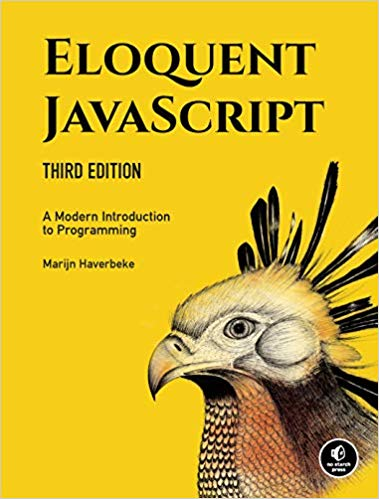

Poglavje 4 P2.1 JavaScript, jezik svetovnega spleta

P2.1
Sodelovalna tabla, ki jo bomo uporabljali pred in med predavanji ter je namenjena odložišču za vprašanja in komentarje. Vsi testni primeri, predstavljeni v okviru predavanja P2.1, so na voljo v GitHub repozitoriju SP-2023-2024/Snippets.
4.1 Razvoj jezika
ECMAScript (ali ES) je programski jezik za splošno uporabo, ki ga je z ECMA-262 standardizirala Ecma International. Gre za JavaScript standard, ki zagotavlja interoperabilnost spletnih strani v različnih spletnih brskalnikih. Oznaki JavaScript in ECMAScript dejansko predstavljata isti pojem. Evolucija programskega jezika je prikazana v tabeli 4.1.
| Verzija | Uradno ime | Leto | Opis |
|---|---|---|---|
| 1 |
ECMAScript 1 (JS ES1) |
1997 | Prva verzija. |
| 2 |
ECMAScript 2 (JS ES2) |
1998 | Uredniške spremembe. |
| 3 |
ECMAScript 3 (JS ES3) |
1999 |
Regularni izrazi in try/catch.
|
| 4 |
ECMAScript 4 (JS ES4) |
Nikoli izdana. | |
| 5 |
ECMAScript 5 (JS ES5) |
2009 |
strict mode, podpora JSON, String.trim(),Array.isArray(), metode za iteracijo po tabelah.
|
| 5.1 |
ECMAScript 5.1 (JS ES5.1) |
2011 | Uredniške spremembe. |
| 6 |
ECMAScript 6 (JS ES6) |
2015 |
let, const, privzete vrednosti parametrov,Array.find(), Array.findIndex().
|
| 7 |
ECMAScript 7 (JS ES7) |
2016 |
Eksponentni operator (**), Array.prototype.includes.
|
| 8 |
ECMAScript 8 (JS ES8) |
2017 |
Skrivanje delov niza, nove lastnosti objekta, async funkcije,souporaba pomnilnika med nitmi. |
| 9 |
ECMAScript 9 (JS ES9) |
2018 |
rest in spread lastnosti (...), asinhrone iteracije,Promise.finally(), dodatki v RegExp.
|
| 10 |
ECMAScript 10 (JS ES10) |
2019 |
Array.prototype.flat, Array.prototype.flatMap,spremembe v Array.sort.
|
| 11 |
ECMAScript 11 (JS ES11) |
2020 |
BigInt, podpora null vrednostim pri operatorju ??.
|
| 12 |
ECMAScript 12 (JS ES12) |
2021 |
replaceAll, Promise.any, novi operatorji ??=, &&=, ||=.
|
| 13 |
ECMAScript 13 (JS ES13) |
2022 |
boljše indeksiranje regularnih izrazov, at(), await na najvišji ravni, error.cause
|
| 14 |
ECMAScript 14 (JS ES14) |
2023 |
toSorted, toReversed, with, findLast, #! komentarji na začetku datotek
|
ECMAScript 3 podpirajo vsi brskalniki, medtem ko ECMAScript 5 podpirajo vsi moderni brskalniki (tj. Chrome \(\ge 23\), Firefox \(\ge 21\), Edge \(\ge 10\), Safari \(\ge 6\), Opera \(\ge 15\)).
4.2 Vrednosti, podatkovni tipi in operatorji
Pri programskem jeziku JavaScript je vsak del informacije predstavljen v obliki vrednosti določenega podatkovnega tipa:
- število88, zapisano s 64 biti, npr.
13,9.81,2.998e8,- s števili lahko opravljamo aritmetične operacije (
+,-,*in/), - obstajajo tudi tri posebne vrste števil:
Infinityin-Infinity, ki predstavljata neskončni vrednosti,NaN89 predstavlja rezultat pri napačnih aritmetičnih operacijah, npr.0 / 0,
- s števili lahko opravljamo aritmetične operacije (
- niz90 predstavlja besedilo, npr.
"Gremo mi na lepše", 'Biti ali ne biti',- uporabimo lahko enojne
'ali dvojne"narekovaje, - pri vključevanju posebnih znakov uporabimo
\, npr."To je prva vrstica\nTo je druga vrstica",
- uporabimo lahko enojne
- logična vrednost91, ki je lahko
truealifalse,- rezultat primerjave vrednosti, npr.
>(večje),<(manjše),==(enako),!=(različno), - edina vrednost v JavaScript, ki ni enaka sama sebi, je
NaN, saj veljaNaN != NaN, - trije logični operatorji
&&(in),||(ali) in!(negacija), - obstaja tudi logični (pogojni) operator na treh vrednostnih
pogoj ? 'resnično' : 'neresnično',
- rezultat primerjave vrednosti, npr.
- objekt92,
- funkcija93 in
- neopredeljena vrednost94 se uporablja ob pomanjkanju vrednosti s pomenom,
nullinundefined, ki sta praktično identični.
JavaScript podpira samodejno pretvorbo podatkovnih tipov, kot je prikazano na spodnjem primeru:
js/osnove_JavaScript.js
// Vrednosti, podatkovni tipi in operatorji
console.log(8 * null); // 0
console.log("5" - 1); // 4
console.log("5" + 1); // 51
console.log("pet" * 2); // NaN
console.log(false == 0); // true
console.log(null == undefined); // true
console.log(null == 0); // falseKonzola
JavaScript ob “napačnem” podatkovnem tipu poskrbi za pretvorbo vrednosti, ki ni vedno takšna, kot bi pričakovali.
V 1. primeru se null pretvori v 0, zato je odgovor 0. V 2. primeru se niz "5" pretvori v število 5 in rezultat je 4. V nasprotju s prepričanjem pa v 3. primeru operacija seštevanja + povzroči konkatenacijo nizov, kjer je število 1 pretvorjeno v niz "1" in tako dobimo odgovor "51". V 4. primeru gre za pretvorbo niza "pet" v NaN, kar povzroči tudi končni rezultat NaN. V 5. primeru je rezultat pričakovan. Ko primerjamo vrednosti istega podatkovnega tipa med seboj, je rezultat pričakovan, razen v primeru NaN.
Namig: Ko želimo preveriti, če ima določena spremenljivka realno vrednost v nasprotju z
nullaliundefined, lahko to preprosto realiziramo s primerjalnim operatorjem==ali!=in vrednostjonull.
Če želimo izvesti primerjavo vrednosti brez pretvorbe, potem se priporoča uporaba operatorjev === in !==, kjer se zahteva točno ujemanje oz. neujemanje vrednosti tudi glede podatkovnih tipov.
Zelo priročna je tudi uporaba operatorja || v spodnjem primeru, kjer vrne vrednost na levi strani, če jo je mogoče pretvoriti v true, sicer vrne vrednost na desni strani.
js/osnove_JavaScript.js
// Uporaba operatorja ||
console.log(null || "uporabnik"); // uporabnik
console.log("Dejan" || "uporabnik"); // DejanKonzola
4.3 Struktura programa
Del programske kode, ki vrača določeno vrednost, se imenuje izraz95. Vsaka vrednost, ki jo neposredno zapišemo (npr. 61, Pozdravljeni), je izraz. JavaScript stavek96 je analogen izjavi oz. trditvi v naravnem jeziku. Program je tako preprosto seznam stavkov.
Najbolj preprosta oblika stavka je izraz, ki ga zaključimo s podpičjem in je prikazan na spodnjem primeru:
V JavaScript programskem jeziku za shranjevanje vrednosti uporabljamo spremenljivke. Za ime spremenljivke lahko uporabimo poljuben stavek, ki ni rezervirana beseda (npr. var ipd.), ne vsebuje presledkov, lahko sicer vsebuje števila, vendar ne na začetku, ne vsebuje ločil (razen znakov $ in _).
Če spremenljivki ne nastavimo nobene vrednosti, potem ob zahtevi po vrnitvi vrednosti dobimo odgovor undefined.
Opomba: V jeziku JavaScript lahko za povezovanje vrednosti s spremenljivkami uporabimo
var,letinconst. Uporabavarinletje podobna (razlika je v obsegu dostopa, kjer do spremenljivke, opredeljen zvar, lahko dostopamo v okviru funkcije, pri opredelitvi zletpa v okviru bloka, npr. znotraj{...}), medtem ko z ukazomconstdodelimo konstantno vrednost izbrani spremenljivki.
Kot že omenjeno, imamo v JavaScript jeziku določene rezervirane besede, ki jih ni priporočljivo uporabljati za imena spremenljivk, ker lahko povzročijo nepredvideno delovanje programa (nekatera izvajalna okolja to dovolijo, spet druga pa ne).
break, case, catch, const, continue, debugger, default, delete, do, else, false, finally, for,
function, if, implements, in, instanceof, interface, let, new, null, package, private, protected,
public, return, static, switch, throw, true, try, typeof, var, void, while, with, yield, this.Okolje97 je zbirka spremenljivk in njenih vrednosti, ki obstaja ob določenem času. Pri zagonu programa okolje ni prazno, saj lahko vsebuje določene spremenljivke, ki so del standardnega jezika in v večini primerov tudi spremenljivke za interakcijo s povezanimi sistemi (npr. v brskalniku so to funkcije, povezane z branjem vhodnih podatkov miške in tipkovnice).
Veliko vrednosti v privzetem okolju so tipa funkcija98. Večina JavaScript izvajalnih okolij podpira funkcijo console.log, ki izpiše besedilo, podano v parametru, na standardni izhod. V večini brskalnikov lahko to konzolo omogočimo tako, da vključimo funkcionalnost “web console” ali “developer tools”.
js/osnove_JavaScript.js
Konzola
Določene funkcije vračajo tudi vrednosti, kot je to prikazano na spodnjem primeru:
js/osnove_JavaScript.js
Konzola
4.4 Kontrolni stavki
Za zapis delujočega programa potrebujemo tri kontrolne strukture, in sicer:
- zaporedje,
- izbiro in
- ponavljanje.
Struktura zaporedja pri programskem jeziku JavaScript poskrbi, da se JavaScript stavki izvedejo v zaporedju, v katerem so zapisani.
Pri strukturi izbire JavaScript podpira naslednje 3 možnosti:
if,if...elseinswitch, ki izbere eno izmed akcij glede na vrednost izraza.
Pri strukturi ponavljanja nam JavaScript omogoča:
while,do...while,for,for...in(sprehod po elementih objekta) infor...of(sprehod po elementih tabele).
4.4.1 if stavek
Pri if stavku izberemo akcijo, če je pogoj resničen.
js/osnove_JavaScript.js
// if stavek
var ocenaStudenta = Math.floor(Math.random() * 100);
console.log("Ocena študenta je " + ocenaStudenta + ".");
if (ocenaStudenta >= 49.50) console.log("Predmet ste opravili!");Konzola
4.4.2 if...else stavek
Pri if...else stavku izberemo akcijo, če je pogoj resničen, in drugo akcijo, če pogoj ni resničen.
js/osnove_JavaScript.js
// if...else stavek
var ocenaStudenta = Math.floor(Math.random() * 100);
console.log("Ocena študenta je " + ocenaStudenta + ".");
if (ocenaStudenta >= 49.50) console.log("Predmet ste opravili!");
else console.log("Predmeta niste opravili!");Konzola
4.4.2.1 Pogojni operator ?:
V JavaScript jeziku imamo na voljo tudi pogojni operator ?:, ki je tesno povezan z delovanjem if...else stavka. Je edini operator v JavaScript, ki sprejme 3 operande. Prvi operand je logični pogoj, drugi je vrnjena vrednost ob resničnem pogoju in tretji operand je vrnjena vrednost ob neresničnem pogoju.
Prejšnji primer lahko poenostavimo in zapišemo v 1 vrstici.
js/osnove_JavaScript.js
// Pogojni operator ?:
console.log(
ocenaStudenta >= 49.5 ? "Predmet ste opravili!" : "Predmeta niste opravili!"
);Konzola
4.4.2.2 Vgnezdeni if...else stavek
js/osnove_JavaScript.js
// Vgnezdeni if...else stavek
if (ocenaStudenta >= 89.5) console.log("Ocena 10.");
else if (ocenaStudenta >= 79.5) console.log("Ocena 9.");
else if (ocenaStudenta >= 69.5) console.log("Ocena 8.");
else if (ocenaStudenta >= 59.5) console.log("Ocena 7.");
else if (ocenaStudenta >= 49.5) console.log("Ocena 6.");
else {
console.log("Ocena 5.");
console.log("Več sreče prihodnjič!");
}Konzola
V predstavljenem primeru vsaka struktura izbire pričakuje zgolj 1 stavek (v našem primeru so to vse if in else if strukture). Če želite vključiti več stavkov, potem uporabite zaviti oklepaj { in zaklepaj } (v našem primeru je to else struktura).
4.4.2.3 switch stavek
V primeru, ko moramo vrednost spremenljivke testirati večkrat za posamezne vrednosti, lahko v JavaScript jeziku uporabimo switch stavek, ki je sestavljen iz množice primerov case in opcijski primer default. V našem primeru gre za primer igralne kocke s šestimi možnimi izidi. Izid najprej naključno generiramo, nato pa izpišemo število pik, kjer je potrebno besedilo pika izpisati v pravilni obliki. switch stavek po vrsti preverja ujemanje pogojev in ko do tega pride, se izvede koda, opredeljena za ta pogoj. Na koncu kode vsakega primera mora biti tudi ukaz break, ki preneha z iskanjem ujemanja. Lahko pa ta ukaz namenoma izpustimo (v našem primeru je izpis za pogoja 3 in 4 enak) in v tem primeru se izvede še naslednje ujemanje.
js/osnove_JavaScript.js
// switch stavek
var stPik = Math.floor(Math.random() * 6) + 1;
switch(stPik) {
case 1:
console.log(stPik + " pika");
break;
case 2:
console.log(stPik + " piki");
break;
case 3:
case 4:
console.log(stPik + " pike");
break;
default:
console.log(stPik + " pik");
break;
}Konzola
4.5 Operatorji
V jeziku JavaScript imamo na voljo številne operatorje dodeljevanja, ki jih lahko uporabljamo na 2 načina:
spremenljivka = spremenljivka operator izraz(npr.c = c + 3) alispremenljivka operator = izraz(npr.c += 3).
Vsi primeri aritmetičnih operatorjev dodeljevanja so zbrani v tabeli 4.2.
| Operator dodeljevanja | Začetna vrednost spremenljivke | Primer izraza | Daljša oblika izraza | Dodeljevanje |
|---|---|---|---|---|
+=
|
c = 3
|
c += 7
|
c = c + 7
|
vrednost 10 spremenljivki c
|
-=
|
d = 5
|
d -= 4
|
d = d - 4
|
vrednost 1 spremenljivki d
|
*=
|
e = 4
|
e *= 5
|
e = e * 5
|
vrednost 20 spremenljivki e
|
/=
|
f = 6
|
f /= 3
|
f = f / 3
|
vrednost 2 spremenljivki f
|
%=
|
g = 12
|
g %= 9
|
g = g % 9
|
vrednost 3 spremenljivki g
|
V JavaScript jeziku so na voljo tudi unarni operatorji za povečanje (++) in zmanjšanje (--) vrednosti, kjer so različni scenariji uporabe predstavljeni v tabeli 4.3.
| Operator | Primer | Pomen | Obrazložitev |
|---|---|---|---|
++
|
++a
|
predhodno povečevanje vrednosti |
povečaj a za 1, nato uporabi novo vrednost spremenljivke a
|
++
|
a++
|
kasnejše povečevanje vrednosti |
uporabi trenutno vrednost spremenljivke a, nato povečaj a za 1
|
--
|
--b
|
predhodno zmanjšanje vrednosti |
zmanjšaj b za 1, nato uporabi novo vrednost spremenljivke b
|
--
|
b--
|
kasnejše zmanjševanje vrednosti |
uporabi trenutno vrednost spremenljivke b, nato zmanjšaj b za 1
|
Prav tako imamo na voljo logične operatorje:
&&(logični IN), kjer je rezultattrue, če sotruevsi pogoji,||(logični ALI), kjer je rezultattrue, če jetruevsaj en pogoj in!(logična negacija).
Pri uporabi operatorjev je pomemben tudi vrstni red in odločitev o tem, ali potrebujemo oklepaje za določitev specifičnega vrstnega reda izvajanja. Za lažje razumevanje vseh operatorjev v jeziku JavaScript so v tabeli 4.4 zbrane podrobnosti.
| Operator | Asociativnost | Tip |
|---|---|---|
++, --, !
|
od desne proti levi | unarni99 |
*, /, %
|
od leve proti desni | multiplikativni100 |
+, -
|
od leve proti desni | aditivni101 |
<, <=, >, >=
|
od leve proti desni | relacijski102 |
==, !=, ===, !==
|
od leve proti desni | enakostni103 |
&&
|
od leve proti desni | logični IN104 |
||
|
od leve proti desni | logični ALI105 |
?:
|
od desne proti levi | pogojni106 |
=, +=, -=, *=, /=, %=
|
od desne proti levi | dodeljevalni107 |
4.7 Funkcije
4.7.1 Opredelitev funkcije
Opredelitev funkcije je preprosta opredelitev spremenljivke, kjer je vrednost spremenljivke funkcija, kot prikazuje spodnji primer:
js/funkcije.js
// Opredelitev funkcije
const pozdrav = function() {
console.log("Ne me motit', delam ...");
};
const potenca = function (osnova, eksponent) {
var rezultat = 1;
for (var stevec = 0; stevec < eksponent; stevec++) rezultat *= osnova;
return rezultat;
};
const potencaMaloDrugace = (osnova, eksponent) => {
var rezultat = 1;
for (var stevec = 0; stevec < eksponent; stevec++) {
rezultat *= osnova;
}
return rezultat;
};
pozdrav();
console.log(potenca(2, 10));
console.log(potencaMaloDrugace(2, 10));Konzola
Ne me motit', delam ...
1024
1024Opazimo lahko, da nekatere funkcije vračajo vrednost (npr. funkcija potenca), nekatere pa ne (npr. funkcija pozdrav).
4.7.2 Parametri in kontekst
Način obnašanja parametrov funkcije je podoben kot pri navadnih spremenljivkah s to razliko, da je njihova začetna vrednost podana s strani kličočega in ne v izvorni kodi same funkcije.
Pomembna lastnost spremenljivk, ki jih kreiramo znotraj funkcije, je lokalnost. To pomeni, da je v primeru funkcije potenca spremenljivka rezultat lokalne narave in se kreira ob vsakem novem klicu funkcije potenca. Ta lokalnost pa velja zgolj za parametre funkcij in spremenljivke, deklarirane znotraj same funkcije. Vse spremenljivke, ki jih opredelimo zunaj funkcij, so privzeto globalne in vidne v celotnem programu, do njih lahko dostopamo tudi znotraj funkcij (če seveda znotraj funkcije ne opredelimo spremenljivke z istim imenom).
Kot prikazuje spodnji primer, s tem mehanizmom preprečimo neželene vplive med funkcijami. Če bi si delili vse spremenljivke med programi, potem bi imeli zelo veliko dela z iskanjem enoličnih imen spremenljivk. Z opredelitvijo lokalnosti spremenljivke pa lahko ponovno uporabimo ista imena globalnih spremenljivk za lokalna imena.
js/funkcije.js
// Parametri in kontekst
var x = "zunaj";
var f1 = function() {
var x = "znotraj f1";
};
f1();
console.log(x);
var f2 = function() {
x = "znotraj f2";
};
f2();
console.log(x);Konzola
zunaj
znotraj f2V jeziku JavaScript pa ni razlikovanja zgolj med globalnimi in lokalnimi spremenljivkami, ampak lahko z ugnezdenjem funkcij pridemo do več ravni lokalnosti. V naslednjem primeru je to prikazano na ugnezdenih funkcijah ravnina in hrib znotraj funkcije pokrajina, ki obe dostopata do globalne spremenljivke rezultat znotraj funkcije pokrajina.
js/funkcije.js
// Ugnezdeni kontekst
const pokrajina = function() {
var rezultat = "";
const ravnina = function(dolzina) {
for (var stevec=0; stevec < dolzina; stevec++)
rezultat += "_";
};
const hrib = function(dolzina) {
rezultat += "/";
for (var stevec=0; stevec < dolzina; stevec++)
rezultat += "'";
rezultat += "\\";
};
ravnina(2);
hrib(3);
ravnina(4);
hrib(2);
ravnina(2);
return rezultat;
}
console.log(pokrajina());Konzola
__/'''\____/''\__Funkcije lahko opredelimo tudi na krajši način, kot smo jih do sedaj (npr. var prihodnost = function ...), in sicer function prihodnost() { ....
To imenujemo deklaracija funkcije in jo lahko opredelimo kjerkoli v kodi, saj se konceptualno prestavijo na začetek izvajanja kode. Težave se lahko pojavijo, če takšno funkcijo opredelimo znotraj if stavka, saj različna JavaScript okolja to različno interpretirajo.
js/funkcije.js
// Deklaracija funkcije
console.log("Pipi in Melkijad napovedujeta prihodnost:", prihodnost());
function prihodnost() {
return "Denar je še vedno poguba človeštva.";
}Konzola
Pipi in Melkijad napovedujeta prihodnost: Denar je še vedno poguba človeštva.V jeziku JavaScript število parametrov pri klicu funkcije ni strogo zahtevano. Če v primeru klica funkcije posredujemo več parametrov, kot jih funkcija zahteva, odvečne preprosto ignorira. Podobno se zgodi, če funkciji posredujemo premajhno število parametrov, saj v tem primeru manjkajočim privzeto nastavi vrednost undefined. S tem so lahko povezane tudi težave, ko v primeru napačnega števila parametrov ne bomo dobili nobenega obvestila. So pa tudi številne prednosti in ena izmed njih je vpeljava opcijskih parametrov, kot je to prikazano na naslednjem primeru s prilagoditvijo naše funkcije potenca.
js/funkcije.js
// Opcijski parametri
const potencaPonovno = function (osnova, eksponent) {
if (eksponent == undefined) eksponent = 2;
var rezultat = 1;
for (var stevec = 0; stevec < eksponent; stevec++) rezultat *= osnova;
return rezultat;
};
console.log(potencaPonovno(4));
console.log(potencaPonovno(4, 3));Konzola
16
644.7.3 Zaprtje
Sposobnost referenciranja določenega primerka lokalne spremenljivke znotraj določene funkcije se imenuje zaprtje108 in je prikazan na naslednjem primeru:
js/funkcije.js
// Zaprtje
function mnozenje(faktor) {
return function(stevilo) {
return stevilo * faktor;
};
}
var dvakrat = mnozenje(2);
console.log(dvakrat(5));Konzola
10V našem primeru se zaprtje nanaša na function, ki izvorno kodo v nadaljevanju “zamrzne” in jo zapakira v paket. Ko do tega paketa dostopamo, se sproži izvajanje s podanim parametrom (v našem primeru \(5\)).
4.7.4 Rekurzija
Rekurzivna funkcija je tista, ki kliče sama sebe. S tem načinom delovanja ni nič narobe, dokler funkcija poskrbi, da ne zapolni sklada in posledično pripelje do napake sistema.
js/funkcije.js
// Rekurzija
const potencaRekurzija = function (osnova, eksponent) {
if (eksponent == 0) return 1;
else return osnova * potencaRekurzija(osnova, eksponent - 1);
};
console.log(potencaRekurzija(2, 3));Konzola
8Pogosto obstaja dilema med rekurzivnim in iterativnim načinom razvoja, kjer je v ospredju predvsem vprašanje elegantnosti rešitve in hitrosti implementacije. Pri tem velja upoštevati enostavno pravilo, ki nam nalaga razvoj elegantnih rešitev in ko se izkaže, da je naša rešitev prepočasna, začnemo z iskanjem počasnih delov, ki jih potem implementiramo bolj učinkovito in na ta način žrtvujemo del elegantnosti rešitve za hitrost izvajanja.
4.8 Podatkovne strukture
Števila, nizi in logične vrednosti so enostavni podatkovni tipi, zato jih s pomočjo objektov grupiramo v bolj kompleksne podatkovne strukture.
V jeziku JavaScript imamo na voljo enostavno strukturo polja109, kjer lahko združimo več vrednosti, kot je prikazano v naslednjem primeru. Za zapis podatkov uporabimo oglate oklepaje [ ... ], ravno tako lahko dostopamo do posameznega elementa z indeksom, kjer se števec začne pri \(0\), kot je tudi prikazano v primeru.
js/podatkovne_strukture.js
// Polja
var seznamStevil = [3, 4, 5, 7, 11, 18];
console.log(seznamStevil[1]);
console.log(seznamStevil[1 - 1]);Konzola
4
3Pogosto v JavaScript kodi opazimo zahtevo po lastnosti določene vrednosti, npr. niz.length (vrne dolžino niza) ali Math.max (vrne največjo vrednost). Do lastnosti x vrednosti vrednost lahko dostopamo na dva načina, in sicer:
vrednost.x(xmora biti dejansko poimenovanje lastnosti izbrane vrednosti) alivrednost[x](xje izraz, ki se izvede in iz tega pridobi poimenovanje lastnosti).
Oba pristopa delujeta podobno z manjšo razliko, ki je opisana zgoraj.
Objekti imajo poleg lastnosti tudi metode, t.j. lastnosti, ki referencirajo funkcije. Kot prikazuje naslednji primer, ima vsak niz opredeljeno lastnost toUpperCase, ki ustvari kopijo niza, kjer so vse črke velike.
js/podatkovne_strukture.js
Konzola
function
KRNEKIPri grupiranju enostavnih podatkovnih tipov v bolj kompleksne podatkovne strukture si pomagamo z objekti.
Kot primer si zamislimo dnevnik aktivnosti, kjer hranimo podatke o tem ali smo se spremenili v veverico, in kaj so bili dogodki v dnevu. Najbolj enostavno takšen objekt opredelimo z zavitimi oklepaji { ... }, kjer posamezne elemente (lastnosti in vrednosti) medsebojno ločimo z vejicami. Če posamezna lastnost nima ustreznega imena (npr. vsebuje presledke), potem ime lastnosti obdamo z narekovaji.
Če zahtevamo vrednost lastnosti, ki ne obstaja, potem dobimo odgovor undefined. Vrednost lastnosti lahko preprosto nastavimo z operatorjem =.
S pomočjo ukaza delete zahtevamo brisanje izbrane lastnosti objekta. Če lastnost pri izbranem objektu obstaja, lahko preverimo z operatorjem vsebovanja in.
js/podatkovne_strukture.js
// Objekti
var dan1 = {
veverica: false,
dogodki: ["delo", "drevo", "pica", "tek", "TV"]
};
console.log(dan1.veverica);
console.log(dan1.volk);
dan1.volk = false;
console.log(dan1.volk);
delete dan1.volk;
console.log("volk" in dan1);
console.log("veverica" in dan1);Konzola
false
undefined
false
false
trueČe želimo shraniti celoten dnevnik dogodkov po dnevih, lahko za to uporabimo polje, kot prikazuje naslednji primer.
js/podatkovne_strukture.js
// Dnevnik
var dnevnik = [
{
dogodki: ["delo", "drevo", "pica", "tek", "TV"],
veverica: false
}, {
dogodki: ["delo", "sladoled", "travnik", "lasagna", "drevo", "umivanje zob"],
veverica: false
}, {
dogodki: ["vikend", "kolesarjenje", "odmor", "arašidi", "pivo"],
veverica: true
}
];
console.log(typeof dnevnik);Konzola
objectPri referenciranju objektov moramo biti previdni; če so npr. vse lastnosti določenih objektov enake, še ne pomeni da gre za dejansko isti referenci na fizično shranjeno lokacijo. To nam prikazuje tudi naslednji primer, kjer imamo 3 objekte, ki so navidezno med seboj enaki, vendar to velja zgolj za prva dva. V tem primeru moramo biti tudi pozorni na spreminjanje vrednosti lastnosti, saj se bo sprememba odražala pri obeh.
js/podatkovne_strukture.js
// Spreminjanje vrednosti
var objekt1 = { vrednost: 10 };
var objekt2 = objekt1;
var objekt3 = { vrednost: 10 };
console.log(objekt1 == objekt2);
console.log(objekt1 == objekt3);
objekt1.vrednost = 15;
console.log(objekt2.vrednost);
console.log(objekt3.vrednost);Konzola
true
false
15
10Objekte lahko zaradi lažjega dostopa shranimo v obliki seznama110, kjer do posameznega elementa dostopamo kar z imenom lastnosti, kot to prikazuje naslednji primer.
js/podatkovne_strukture.js
Konzola
{prvi: 1, drugi: 2}Poleg seznama je zelo pogosto uporabljan način shranjevanja podatkov tudi polje, ki smo ga že predstavili v začetku tega poglavja. V nadaljevanju bodo predstavljene nekatere bolj pogosto uporabljane metode (push, pop, shift, unshift, indexOf, slice).
js/podatkovne_strukture.js
// Metode na poljih
var vrednosti = [2, 4, 6, 8, 10, 12, 14];
console.log(vrednosti);
vrednosti.push(16); // Doda element na konec in vrne novo dolžino
console.log(vrednosti);
vrednosti.pop(); // Izbriše zadnji element in ga vrne
console.log(vrednosti);
vrednosti.shift(); // Izbriše prvi element in ga vrne
console.log(vrednosti);
vrednosti.unshift(2); // Doda element na začetek in vrne novo dolžino
console.log(vrednosti);
console.log(vrednosti.indexOf(10)); // Vrne indeks prve pojavitve elementa v polju
console.log(vrednosti.slice(2,5)); // Vrne vmesne elemente v obliki poljaKonzola
[2, 4, 6, 8, 10, 12, 14]
[2, 4, 6, 8, 10, 12, 14, 16]
[2, 4, 6, 8, 10, 12, 14]
[4, 6, 8, 10, 12, 14]
[2, 4, 6, 8, 10, 12, 14]
4
[6, 8, 10]4.8.1 Nizi in njihove lastnosti
Kot že omenjeno, imajo nizi nekatere vnaprej opredeljene lastnosti, kot je length ali toUpperCase. Težava se pojavi, če želimo dodati novo lastnost, saj se le-ta ne shrani. Kot vidimo iz spodnjega primera, pri poskusu dodajanja takšne lastnosti sistem ne vrne nobene napake, vendar lastnosti ne shrani, kar je pričakovano pri enostavnih podatkovnih tipih, kot je niz, število in logične vrednosti.
js/podatkovne_strukture.js
Konzola
undefinedImamo pa poleg že naštetih lastnosti na voljo še nekaj drugih, ki so predstavljene v nadaljevanju.
js/podatkovne_strukture.js
console.log("posel".slice(1,5)); // Vrne podniz od začetnega do končnega indeksa
console.log("posel".indexOf("e")); // Vrne indeks izbranega podniza
console.log(" posel \n ".trim()); // Odstrani nepotrebne presledke
console.log("posel".length); // Vrne dolžino niza
console.log("posel".charAt(0)); // Vrne črko na indeksu
console.log("posel"[0]); // Vrne črko na indeksuKonzola
osel
3
posel
5
p
p4.8.2 Objekt argumentov funkcije
Vedno, ko pokličemo funkcijo, se v okolju ustvari spremenljivka arguments, kjer se izvede koda funkcije. Ta spremenljivka referencira objekt, ki vsebuje vse argumente, posredovane funkciji. V jeziku JavaScript je dovoljeno posredovati več ali manj argumentov funkciji, kot jih sama zahteva.
js/podatkovne_strukture.js
// Objekt argumentov funkcije
function brezArgumentov() {}
brezArgumentov(1,2,3); // Takšen klic je dovoljen
function trijeArgumenti(a, b, c) {}
trijeArgumenti(); // Tudi takšen klic je dovoljen
function stevecArgumentov() {
console.log("Podanih je bilo", arguments.length, "argumentov.");
}
stevecArgumentov("včeraj", "danes", "jutri", "pojutrišnjem", "nikoli");Konzola
Podanih je bilo 5 argumentov.Preprosto je tudi obvladovanje večjega števila parametrov pri funkcijah, ki npr. sprejmejo poljubno število parametrov. V nadaljevanju je v tem kontekstu podan primer izračuna maksimalne vrednosti iz seznama števil.
js/podatkovne_strukture.js
function max(...stevila) {
var rezultat = -Infinity;
for (var stevilo of stevila) {
if (stevilo > rezultat)
rezultat = stevilo;
}
return rezultat;
}
console.log(max(13, 8, -22, 38, 7));Konzola
384.8.3 JSON
Format JSON111 je zelo razširjen način shranjevanja in izmenjave podatkov na spletu. JSON je podoben zapisu objektov in polj v jeziku JavaScript z manjšimi omejitvami. Pri JSON morajo vsa imena lastnosti na začetku in na koncu vsebovati narekovaje in dovoljeni so zgolj enostavni podatkovni izrazi (brez klicev funkcij, spremenljivk ali kar zahteva dejansko izračunavanje). Komentarji v JSON niso dovoljeni.
js/podatkovne_strukture.js
var niz = JSON.stringify({ime: "Dejan", rojen: 1980});
console.log(niz);
console.log(JSON.parse(niz).rojen);Konzola
{"ime":"Dejan","rojen":1980}
1980V jeziku JavaScript imamo na voljo funkciji JSON.stringify (JavaScript vrednost pretvori v JSON niz) in JSON.parse (JSON niz pretvori v JavaScript vrednosti), ki omogočajo pretvorbo iz in v JSON format.
4.9 Funkcije višjega reda
Poglejmo si dva enostavna primera seštevanja vrednosti. Če upoštevamo celotno število vrstic kode 1. in 2. rešitve, bi ugotovili, da je 2. rešitev zagotovo krajša. Če pa bi iskali rešitev, kjer je večja verjetnost hrošča, potem bi se verjetno odločili za 2. rešitev problema, saj smo v 1. rešitvi problem lepše razdelili na dva odvisna problema seštevanje vrednosti in vračanje vrednosti v polju.
js/funkcije_visjega_reda.js
// 1. rešitev problema
var skupaj = 0, stevec = 1;
while (skupaj <= 10) {
skupaj += stevec;
stevec += 1;
}
console.log(skupaj);
// 2. rešitev problema
console.log(sum(range(1, 10)));Konzola
15
Uncaught ReferenceError: sum is not defined4.9.1 Abstrakcija
Način razmišljanja in reševanja problemov, kjer skrijemo podrobnosti implementacije in problem razdelimo na več manjših problemov ter se z reševanjem celotnega problema ukvarjamo na višji ravni, imenujemo abstrakcija.
Poglejmo si primer enostavnega sprehoda po polju vrednosti, kjer vsako vrednosti izpišemo.
js/funkcije_visjega_reda.js
var stevila = [1, 2, 3];
for (var i = 0; i < stevila.length; i++) {
var stevilo = stevila[i];
console.log(stevilo);
}Konzola
1
2
3Če bi želeli omenjeno funkcionalnost z abstrakcijo prestaviti v novo funkcijo (npr. izpisiElement), je primer rešitve prikazan v nadaljevanju.
js/funkcije_visjega_reda.js
function izpisiElement(polje) {
for (var i = 0; i < polje.length; i++) console.log(polje[i]);
}
izpisiElement(stevila);Konzola
1
2
3Z naslednjo stopnjo abstrakcije pa lahko parametriziramo celo akcijo (npr. obdelajElement(polje, akcija)), ki se izvede ob vsakem elementu, tako da lahko z elementom naredimo kaj drugega, kot ga zgolj izpišemo. Akcija je namreč zgolj funkcija in funkcije v jeziku JavaScript so le vrednosti, ki jih lahko posredujemo kot parameter. Spodnji primer prikazuje podobno funkcionalnost kot prej, s to razliko, da izpis na zaslon (console.log) zahtevamo kot drugi parameter akcija funkcije obdelajElement(polje, akcija).
js/funkcije_visjega_reda.js
function obdelajElement(polje, akcija) {
for (var i = 0; i < polje.length; i++) akcija(polje[i]);
}
obdelajElement(stevila, console.log);Konzola
1
2
3Sedaj imamo pripravljeno ogrodje, da lahko z elementi polja naredimo tudi kaj drugega, npr. jih seštejemo, kot prikazuje naslednji primer.
js/funkcije_visjega_reda.js
var vsota = 0;
obdelajElement(stevila, function(stevilo) {
vsota += stevilo;
});
console.log(vsota);Konzola
64.9.2 Funkcije višjega reda
Funkcije, ki delujejo na druge funkcije, bodisi so podane kot argument, bodisi jih vračajo, imenujemo funkcije višjega reda. Če upoštevamo predhodno ugotovitev, da so funkcije navadne vrednosti, potem funkcije višjega reda v tem kontekstu niso nič nenavadnega.
Funkcije višjega reda prihajajo v različnih oblikah, in sicer so to lahko funkcije, ki:
- ustvarjajo nove funkcije,
- spreminjajo druge funkcije in
- vplivajo na kontrolni tok.
js/funkcije_visjega_reda.js
// Ustvarjanje nove funkcije
function vecjeOd(n) {
return function (m) {
return m > n;
};
}
var vecjeOd10 = vecjeOd(10);
console.log(vecjeOd10(11));
// Spreminjanje druge funkcije
function klic(f) {
return function(argument) {
console.log("klicanje z", argument);
var vrednost = f(argument);
console.log("klicano z", argument, "- dobil", vrednost);
return vrednost;
};
}
klic(Boolean)(0);
klic(String)(0);
// Vplivanje na kontrolni tok
function razenCe(pogoj, posledica) {
if (!pogoj) posledica();
}
function ponovi(iteracije, vrednost) {
for (var i = 0; i < iteracije; i++) vrednost(i);
}
ponovi(3, function(n) {
razenCe(n % 2, function() {
console.log(n + " je sodo");
});
});Konzola
true
klicanje z 0
klicano z 0 - dobil false
klicanje z 0
klicano z 0 - dobil 0
0 je sodo
2 je sodo4.9.3 Posredovanje argumentov
V primeru funkcije klic(f), ki je bila predstavljena že predhodno, imamo težavo, če posredujemo več parametrov, saj se bo upošteval le prvi. Če bi jih želeli upoštevati še več, bi lahko preprosto ročno dodali preostale parametre, vendar ne vemo, koliko bo teh parametrov. Za takšne primere imamo v jeziku JavaScript na voljo funkcijo apply, ki ji podamo polje vrednosti in funkcijo pokliče s tem poljem parametrov.
js/funkcije_visjega_reda.js
Vsebinsko gledano predstavljeni primer ni ravno smiseln, je pa zanimiv zaradi vzorca, ki ga prikazuje - funkcija, ki jo vrača, uporabi vse podane argumente. Prvi argument funkcije apply (v našem primeru null) se lahko uporabi za simulacijo klica metode.
4.10 Objekti
Pri obvladovanju kompleksnosti se le-tega po navadi lotimo z ločevanjem na manjše dele, ki so med seboj neodvisni. Ti majhni deli so pogosto objekti.
Objekt je struktura, ki skrije kompleksnost in nudi dostop preko metod, ki predstavljajo vmesnik, preko katerega lahko objekt uporabimo. Ideja je, da je vmesnik relativno enostaven, medtem ko so vsi kompleksni elementi v notranjosti in se z njimi ne ukvarjamo, ko objekt uporabljamo.
4.10.1 Metode
Metode so preproste lastnosti, ki hranijo vrednosti funkcij in so prikazane v naslednjem enostavnem primeru.
js/objekti.js
var ribica = {};
ribica.povej = function(izjava) {
console.log("Ribica pravi '" + izjava + "'");
};
ribica.povej("Še sem živa.");Konzola
Ribica pravi 'Še sem živa.'Po navadi metode izvedejo določene funkcionalnosti na lastnostih objekta, na katerem so bile klicane, kot to prikazuje spodnji primer.
js/objekti.js
function povej(izjava) {
console.log(this.tip + " ribica pravi '" + izjava + "'");
}
var zlataRibica = { tip: "Zlata", povej: povej };
var debelaRibica = { tip: "Debela", povej: povej };
zlataRibica.povej("Ojoj, danes sem pa preveč jedla!");
debelaRibica.povej("Lakom lačen.");Konzola
Zlata ribica pravi 'Ojoj, danes sem pa preveč jedla!'
Debela ribica pravi 'Lakom lačen.'Pri uporabi vrednosti lastnosti objektov, nad katerimi kličemo metode, moramo uporabiti rezervirano besedo this. Na voljo pa imamo tudi druge možnosti, in sicer metodi apply in call. Pri uporabi apply metode lahko s prvim parametrom simuliramo klic metode in ga uporabimo za dodajanje vrednosti rezervirani besedi this. Podobno je pri metodi call, kjer tudi pokličemo funkcijo, ki je metoda, vendar v tem primeru argumente podamo normalno in ne v obliki polja. Enostaven primer uporabe teh metod je prikazan v nadaljevanju.
js/objekti.js
povej.apply(debelaRibica, ["Burp!"]);
povej.call({ tip: "Starejša" }, "Ojoj, ta mladina nevzgojena.");Konzola
Debela ribica pravi 'Burp!'
Starejša ribica pravi 'Ojoj, ta mladina nevzgojena.'4.10.2 Prototipi
V spodnjem enostavnem primeru lahko opazimo, da imajo tudi navidezno prazni objekti že opredeljene določene lastnosti (npr. toString).
js/objekti.js
Konzola
ƒ toString() { [native code] }
[object Object]Skoraj vsi objekti imajo poleg lastnosti opredeljene tudi prototipe. Prototip je drug objekt, ki se uporablja za določitev vrednosti dodatnih lastnosti. Ko pride do zahteve po lastnosti, ki je objekt nima, se sproži iskanje v prototipu objekta in nato prototipu prototipa objekta itd.
V našem primeru je prototip praznega objekta Object.prototype, ki se dejansko pojavlja v vseh JavaScript objektih. Če želimo preveriti prototipe izbranega objekta, lahko uporabimo metodo Object.getPrototypeOf.
js/objekti.js
console.log(Object.getPrototypeOf({}) == Object.prototype);
console.log(Object.getPrototypeOf(Object.prototype));Konzola
true
nullZ uporabo metode Object.create lahko kreiramo nov objekt z določenim prototipom. V spodnjem primeru je razred prototipRibica vsebnik z lastnostmi, ki si jih delijo vse ribice.
js/objekti.js
var prototipRibica = {
povej: function(izjava) {
console.log(this.tip + " ribica pravi '" + izjava + "'");
}
};
var bojnaRibica = Object.create(prototipRibica);
bojnaRibica.tip = "Bojna";
bojnaRibica.povej("V napad!");Konzola
Bojna ribica pravi 'V napad!'4.10.3 Konstruktorji
Bolj priročen način kreiranja objektov, ki imajo opredeljen skupen nabor lastnosti, je z uporabo konstruktorja. V JavaScriptu je klic funkcije, ki ima pred imenom zapisano rezervirano besedo new, uporaba konstruktorja.
Namig: Pri poimenovanju metode, ki predstavlja konstruktor, se priporoča uporaba velike začetnice, da se lažje loči od ostalih metod.
js/objekti.js
function Ribica(tip) {
this.tip = tip;
}
bojnaRibica = new Ribica("Bojna");
var crnaRibica = new Ribica("Črna");
console.log(crnaRibica.tip);Konzola
ČrnaKonstruktorjem je samodejno dodeljena lastnost prototype, ki ima privzeto dodeljen prazen objekt, dedovan iz Object.prototype. Dodajanje prototipov novih metod je tako preprosto in prikazano na naslednjem primeru.
js/objekti.js
Ribica.prototype.povej = function(izjava) {
console.log(this.tip + " ribica pravi '" + izjava + "'");
};
crnaRibica.povej("Vsi ste pogubljeni ...");Konzola
Črna ribica pravi 'Vsi ste pogubljeni ...'4.10.4 Razredna notacija
V JavaScriptu je na voljo tudi bolj berljiva razredna notacija za opredelitev skupine objektov, in sicer je primer na voljo v nadaljevanju.
js/objekti.js
class MorskiPes {
constructor(tip) {
this.tip = tip;
}
povej(izjava) {
console.log(`${this.tip} morski pes pravi '${izjava}'`);
}
}
var beliMorskiPes = new MorskiPes("Beli");
beliMorskiPes.povej("Te olupim, te pojem.");Konzola
Beli morski pes pravi 'Te olupim, te pojem.'4.10.5 Prekrivanje lastnosti
Ko dodamo novo lastnost objektu, se bo ta v vsakem primeru dodala, tudi če je že prej obstajala, vendar ta sprememba ne vpliva na prototip, kot prikazuje spodnji primer.
js/objekti.js
Ribica.prototype.zobje = "majhni";
console.log(bojnaRibica.zobje);
bojnaRibica.zobje = "dolgi, ostri in okrvavljeni";
console.log(bojnaRibica.zobje);
console.log(crnaRibica.zobje);
console.log(Ribica.prototype.zobje);Konzola
majhni
dolgi, ostri in okrvavljeni
majhni
majhni4.10.6 Get in set metode
Pri objektnem pristopu je pogosto dobra praksa, da pri razvoju v izpostavljenem vmesniku ne vključujemo lastnosti, ki niso metode. Namesto, da imamo neposreden dostop do lastnosti, ki vsebuje določeno vrednost, do nje dostopamo z metodama get in set.
Jezik JavaScript nam olajša delo s takšnimi metodami, in sicer lahko opredelimo svoje lastnosti, ki na zunaj izgledajo kot normalne lastnosti, vendar so v ozadju z njimi povezane metode, kot to prikazuje naslednji primer.
js/objekti.js
var kopica = {
elementi: ["paradižnik", "solata", "arašidi"],
get visina() {
return this.elementi.length;
},
set visina(vrednost) {
console.log(
"Ignoriranje zahteve za nastavitev nove višine na",
vrednost,
"."
);
},
};
console.log(kopica.visina);
kopica.visina = 100;Konzola
3
Ignoriranje zahteve za nastavitev nove višine na 100.Na takšen način lahko zaščitimo tudi lastnosti v prototipu, kjer opredelimo novo lastnost z uporabo metode Object.defineProperty in tako zaščitimo pred zunanjim spreminjanjem vrednosti, medtem ko bralni dostop dovolimo.
js/objekti.js
Object.defineProperty(Ribica.prototype, "dolzinaTipa", {
get: function() { return this.tip.length; }
});
var neonkaRibica = new Ribica("Neonka");
console.log(neonkaRibica.dolzinaTipa);
neonkaRibica.dolzinaTipa = 50;
console.log(neonkaRibica.dolzinaTipa);Konzola
6
64.10.7 Primerek
Včasih potrebujemo podatke o tem, kateremu razredu pripada posamezen objekt oz. s katerim konstruktorjem je bil zgrajen. V jeziku JavaScript lahko do tega podatka pridemo z uporabo metode instanceof.
js/objekti.js
Konzola
true
true4.11 Hrošči in obvladovanje napak
Napake v programih po navadi imenujemo hrošči in so lahko programerske napake ali težave ostalih sistemov, s katerimi program komunicira. Znano je tudi dejstvo, da je odkrivanje napak veliko bolj zahtevno kot pisanje programov.
4.11.1 Strog način delovanja
JavaScript nam omogoča uporabo strogega načina112 delovanja, ki ga omogočimo z vključitvijo niza "use strict"; na začetku datoteke ali funkcijskega bloka, kot to prikazuje naslednji primer.
js/napake.js
function iskanjeTezave1() {
"use strict";
for (s = 0; s < 10; s++) // Manjka 'var'
console.log("Juhuu ...");
}
iskanjeTezave1();Konzola
Uncaught ReferenceError: s is not defined
at iskanjeTezave (napake.js:3)
at napake.js:6Kot je razvidno iz primera, je napaka v tem, da spremenljivka s ni opredeljena, kar preprosto odpravimo z uporabo rezervirane besede var pred spremenljivko s. Če ne uporabljamo striktnega načina delovanja, se bo ta del kode izvedel brez napak, saj bo JavaScript v ozadju sam poskrbel za opredelitev globalne spremenljivke s.
Podobna napaka pri strogem načinu delovanja je vrednost this, ki je nastavljena na undefined v funkcijah, ki se jih ne kliče kot metode. V spodnjem primeru kličemo konstruktor brez uporabe rezervirane besede new, tako da this v tem primeru ne referencira novo kreirani objekt.
js/napake.js
function iskanjeTezave2() {
"use strict";
function Oseba(ime) { this.ime = ime; }
var dejan = Oseba("Dejan"); // Manjka 'new'
}
iskanjeTezave2();Konzola
Uncaught TypeError: Cannot set property 'ime' of undefined
at Oseba (napake.js:10)
at iskanjeTezave2 (napake.js:11)
at napake.js:13Z uporabo striktnega načina delovanja takoj dobimo povratno informacijo o napakah, kar je zagotovo koristno. Med drugim takšen način delovanja onemogoči nekatere ostale lastnosti jezika JavaScript, ki niso priporočljive za uporabo.
Namig: Uporaba rezerviranih besed
"use strict"na začetku programa je priporočljiva, saj nam pomaga pri zgodnjem odkrivanju težav.
4.11.2 Testiranje
Pri programiranju in kreiranju novih funkcionalnosti je smiselno sproti pripraviti tudi kodo za testiranje, kot prikazuje primer v nadaljevanju. Mogoče takšna koda deluje kot ponavljanje istih delov, vendar je pri vzdrževanju programske kode zelo koristna. Spodaj je enostaven primer kode za testiranje, vendar imamo na voljo številna ogrodja za testiranje, ki jih lahko sistematično uporabljamo za ta namen.
js/napake.js
function Vektor(x, y) {
this.x = x;
this.y = y;
}
Vektor.prototype.dodaj = function(drugi) {
return new Vektor(this.x + drugi.x, this.y + drugi.y);
};
function testirajVektor() {
var v1 = new Vektor(10, 20);
var v2 = new Vektor(-10, 5);
var v3 = v1.dodaj(v2);
if (v1.x !== 10) return "napaka: x lastnost";
if (v1.y !== 20) return "napaka: y lastnost";
if (v2.x !== -10) return "napaka: negativna x lastnost";
if (v2.y !== 5) return "napaka: y lastnost iz drugega";
if (v3.x !== 0) return "napaka: x lastnost iz rezultata";
if (v3.y !== 25) return "napaka: y lastnost iz rezultata";
return "vse je OK";
}
console.log(testirajVektor());Konzola
vse je OK4.11.3 Obvladovanje izjem
Ko se izvajanje funkcije ne more normalno nadaljevati, želimo izvajanje takoj prekiniti in odpraviti še večji vpliv napake - takšen postopek imenujemo obvladovanje izjem.
js/napake.js
function vprasajZaSmer(vprasanje) {
var odgovor = prompt(vprasanje, "");
if (odgovor.toLowerCase() == "levo") return "L";
if (odgovor.toLowerCase() == "desno") return "D";
throw new Error("Napačna smer: " + odgovor);
}
function poglej() {
if (vprasajZaSmer("V katero smer?") == "L")
return "hišo";
else
return "dve grdi žabi";
}
try {
console.log("Trenutno vidiš " + poglej() + ".");
} catch (napaka) {
console.log(napaka);
} finally {
console.log("Morebitno čiščenje, zaradi napačnih podatkov.");
}Če vnesemo pričakovano smer, npr. desno, potem je rezultat naslednji:
Konzola
Trenutno vidiš dve grdi žabi.
Morebitno čiščenje, zaradi napačnih podatkov.V primeru napake (npr. vnesemo smer nazaj) pa se izvede obvladovanje izjem z naslednjim rezultatom:
Konzola
Error: Napačna smer: nazaj
at vprasajZaSmer (napake.html:50)
at poglej (napake.html:53)
at napake.html:59
Morebitno čiščenje, zaradi napačnih podatkov.V primeru napake sprožimo izjemo z ukazom throw new Error("Napačna smer: " + odgovor), ki jo potem ulovimo v bloku kode try { ... } catch { ... }.
Pri obvladovanju izjem imamo na voljo tudi rezervirano besedo finally, kjer opredelimo funkcionalnost, ki naj se izvede v vsakem primeru (če je prišlo do izjeme ali ne). To lahko vključuje čiščenje okolja, ki zaradi nastopa izjeme, vsebuje neustrezne podatke (npr. določena funkcionalnost se ni v celoti izvedla).
4.12 Regularni izrazi
Regularni izrazi so programska tehnika za opisovanje vzorcev v nizu in se uporabljajo na številnih področjih ter niso uporabni zgolj v programskem jeziku JavaScript. Dejansko gre za dokaj nenavadno orodje, ki na prvi pogled izgleda kriptografsko in tudi podpora v jeziku JavaScript je nekoliko nespretno implementirana. Vendar pa so regularni izrazi po drugi strani izjemno močno in koristno orodje za procesiranje nizov.
Testiranje regularnih izrazov
Spletna stran, kjer lahko testirate regularne izraze na poljubnem vhodnem besedilu. Za opredeljene vzorce je na voljo razlaga, identificirane skupine ujemanja in seznam pogosto uporabljenih simbolov.
4.12.1 Kreiranje regularnega izraza
Regularni izraz je v JavaScript predstavljen kot neke vrste objekt, ki ga lahko kreiramo na dva načina, kot to prikazuje spodnji primer:
- z
RegExpkonstruktorjem ali - z vrednostjo, ki se začne z znakom
/in konča z znakom/.
js/regularni_izrazi.js
V obeh primerih gre za isti vzorec niza, in sicer za niz dolžine 3, kjer je na prvem mestu znak a, na drugem znak b in na tretjem znak c.
Določeni znaki so pri regularnih izrazih rezervirani (npr. ?, +, . idr.), zato moramo pred njim uporabiti ubežni znak \, kot prikazuje naslednji primer, kjer zapišemo vzorec za ujemanje izraza C++.
js/regularni_izrazi.js
4.12.2 Testiranje ujemanja
Najbolj preprosta metoda pri uporabi regularnih izrazov je testiranje ujemanja s pomočjo funkcije test. Če funkcijo pokličemo na objektu regularnega izraza in ji kot parameter podamo niz, na katerem naj preveri ujemanje, kot odgovor dobimo logično vrednost, ki nam pove, če je prišlo do ujemanja vzorca v nizu.
js/regularni_izrazi.js
Konzola
true
false4.12.3 Testiranje ujemanja množice znakov
Testiranje, ali podan niz vsebuje niz abc, bi lahko dosegli tudi z uporabo funkcije indexOf. Z regularnimi izrazi pa lahko izvajamo bolj kompleksne poizvedbe vzorcev nad nizi.
Recimo, da želimo ujemanje poljubne številke, kar v regularnem izrazu zapišemo v oglatih oklepajih, kjer potem zgolj naštejemo znake, katerih ujemanje želimo. V naslednjem primeru testiramo, ali v nizu obstajajo številke (oba primera sta vsebinsko enakovredna).
js/regularni_izrazi.js
Konzola
true
truePri iskanju ujemanja v regularnih izrazih imamo na voljo številne bližnjice, kjer so najbolj pogoste prikazane v tabeli 4.5.
| Bližnjica | Pomen |
|---|---|
\d
|
številka |
\w
|
alfanumerični znak (npr. majhne in velike črke, številke ipd.) |
\s
|
prazen znak (npr. presledek, tabulator, prehod v novo vrstico ipd.) |
\D
|
znak, ki ni številka |
\W
|
znak, ki ni alfanumerični |
\S
|
znak, ki ni prazen znak (presledek, tabulator, prehod v novo vrstico ipd.) |
.
|
poljuben znak, razen prehoda v novo vrstico |
Na ta način bi lahko npr. opredelili regularni izraz za ujemanje datuma v obliki 2090-10-21 10:56, kot to prikazuje naslednji primer.
js/regularni_izrazi.js
var riDatumCas = /\d\d\d\d-\d\d-\d\d \d\d:\d\d/;
console.log(riDatumCas.test("2090-10-21 10:56"));
console.log(riDatumCas.test("2090-okt-21 10:56"));Konzola
true
falsePodobno lahko z regularnimi izrazi preverjamo vrednosti, ki ne ustrezajo določenemu vzorcu, npr. binarna števila v naslednjem primeru. Vzorec je opredeljen tako, da iščemo znake, ki so različni od 0 oz. 1.
js/regularni_izrazi.js
var riNiBinarno = /[^01]/;
console.log(riNiBinarno.test("11001000101101110101"));
console.log(riNiBinarno.test("11001000101101310101"));Konzola
false
true4.12.5 Združevanje delov vzorca
Če želimo posamezen del vzorca uporabiti večkrat, ga preprosto združimo z oklepaji (...), kot to prikazuje naslednji primer.
js/regularni_izrazi.js
Konzola
trueV tem primeru prvi znak + velja zgolj za ponovitve črke o v delu niza Ohoooo, drugi znak + velja zgolj za ponovitve črke o v delu niza goool, medtem ko tretji znak + velja za ponovitve podnizov gol.
Pri tem primeru smo na koncu regularnega izraza uporabili tudi parameter i, ki pri procesiranju vzorca regularnega izraza ne ločuje med majhnimi in velikimi črkami (v našem primeru se beseda npr. začne z veliko začetnico, preostanek pa je zapisan z majhnimi črkami).
4.12.6 Ujemanje in grupiranje
Najbolj enostavna za uporabo pri ujemanju vzorcev regularnih izrazov je metoda test, ki nam zgolj vrača ali ujemanje obstaja ali ne. Na voljo pa imamo tudi metodo exec, ki nam vrne null, če ujemanja ni, in objekt z informacijami o ujemanju, če ujemanje je.
Kot vidimo na naslednjem primeru, je rezultat ujemanja objekt, ki vsebuje vsebino ujemanja in tudi lastnost index, ki nam pove, na katerem mestu se ujemanje začne.
js/regularni_izrazi.js
Konzola
["100", index: 12, input: "ena dva tri 100"]
12V naslednjem primeru iščemo besedilo, ki se nahaja znotraj enojnih narekovajev ', kar smo opredelili kot skupino in v tem primeru nam exec metoda vrača obe skupini.
js/regularni_izraz.js
Konzola
["'glup glup'", "glup glup", index: 14, input: "Riba je rekla 'glup glup'."]4.12.7 Omejevanje besed
Če želimo pri ujemanju najti takšen podniz, ki ustreza besedi in je na začetku ter na koncu omejen z enim ali več znaki, ki niso alfanumerični, lahko za takšen namen preprosto uporabimo bližnjico \b, ki jo vključimo na začetku in koncu podniza, kar tudi prikazuje naslednji primer.
js/regularni_izrazi.js
Konzola
true
falseNamig: Bližnjica
\bne predstavlja dejanskega znaka, ampak zgolj zagotavlja, da se ujemanje vzorca regularnega izraza začne, ko je izpolnjen določen pogoj.
4.12.8 Vzorci z več možnostmi
Recimo, da želimo poiskati ujemanje niza, ki se začne s številko, nato sledi koren besede živali (npr. pujs, krav, rib) in potem še končnica besede, ki je odvisna od števila. Takšen problem bi lahko rešili z naštevanjem vseh možnosti, vendar ugotovimo, da je takšen pristop nepraktičen in obstaja veliko bolj učinkovit pristop, ki je prikazan v nadaljevanju.
js/regularni_izrazi.js
var riZivali = /\b\d+ (pujs|krav|rib)(a|i|e|ov)?\b/;
console.log(riZivali.test("vseh 15 pujsov"));
console.log(riZivali.test("vseh 5 pujskrave"));Konzola
true
falseS pomočjo znaka | naštejemo različne podnize, ki jih iščemo v ujemanju, celotno delovanje ujemanja z regularnimi izrazi pa je prikazano na sliki 4.1.
Slika 4.1: Delovanje regularnega izraza na vzorcu z več možnostmi
Na primeru najprej poskusimo najti ujemanje niza 15 pujsov, katerega postopek iskanja ujemanja je prikazan na sliki 4.1. Konceptualno je delovanje ujemanja naslednje:
- začnemo na začetku niza in poskusimo najti ujemanje,
- v tem primeru imamo omejitev besede
\b, zato lahko v našem diagramu nadaljujemo na naslednji element, vendar v nadaljevanju ni številke, - zato v nadaljevanju začnemo z omejitvijo besede pri drugem presledku in potem se ujemanje na sliki ustrezno izpelje do konca.
4.12.9 Zamenjava podnizov
Nizi v jeziku JavaScript imajo opredeljeno metodo replace, ki se jo lahko uporablja za zamenjavo podnizov podanega niza, kot prikazuje naslednji primer. Opazimo lahko, da se v tem primeru zamenja le prvo ujemanje. Uporabiti pa je možno tudi isto metodo replace z uporabo regularnih izrazov, kjer pri uporabi parametra g zahtevamo menjavo vseh pojavitev.
js/regularni_izrazi.js
Konzola
ati
ataS pomočjo metode replace in referenciranjem skupin pri ujemanju pa lahko rešimo bolj kompleksne naloge. Eden takšnih primerov je podan v nadaljevanju, kjer imamo več vrstic z dvema podatkoma v vrstici - priimkom in imenom. Sedaj bi želeli te podatke preurediti tako, da bi jih zapisali v obliki, kjer je najprej navedeno ime nato sledi presledek in na koncu priimek.
To lahko enostavno dosežemo s sklicevanjem na skupine podnizov $1 in $2, kot to prikazuje primer. Dodatno smo uporabili tudi parameter i, kjer ne razlikujemo med velikimi in majhnimi črkami (angl. case insensitive).
js/regularni_izrazi.js
Konzola
Dejan Lavbič
Sandi GecNamesto drugega parametra v metodi replace lahko posredujemo tudi funkcijo, kar prikazujeta naslednja primera.
V prvem primeru je prikazana funkcija, ki zgolj podniz ujemanja spremeni v velike črke.
js/regularni_izrazi.js
console.log(
"fakulteti fri in fe".replace(/\b(fri|fe)\b/g, function (niz) {
return niz.toUpperCase();
})
);Konzola
fakulteti FRI in FEV drugem, bolj kompleksnem primeru, imamo seznam artiklov na zalogi, ki so podani v številčni vrednosti količine in nazivu artikla. Funkcija zmanjša količino zaloge za 1 in vrne takšen spremenjen rezultat. V primeru, da artikla ni več na zalogi, to izpiše na drugačen način.
js/regularni_izrazi.js
var zaloga = "1 limon, 10 paradižnikov in 115 jajc";
function minusEna(ujemanje, kolicina, enota) {
kolicina = Number(kolicina) - 1;
if (kolicina == 0) kolicina = "nič";
return kolicina + " " + enota;
}
console.log(zaloga.replace(/(\d+) (\w+)/g, minusEna));Konzola
nič limon, 9 paradižnikov in 114 jajc4.12.10 Požrešna metoda ujemanja
S trenutnim znanjem ne bi smeli imeti težav pri implementaciji funkcije, ki odstrani vse komentarje iz obstoječe JavaScript kode. Naš prvi poskus je prikazan v naslednjem primeru. Z regularnimi izrazi opišemo dva načina podajanja komentarjev:
// Enovrstični komentarin/* Večvrstični komentar */.
js/regularni_izrazi.js
function odstraniKomentarje1(koda) {
return koda.replace(/\/\/.*|\/\*[^]*\*\//g, "");
}
console.log(odstraniKomentarje1("1 + /* 2 */3"));
console.log(odstraniKomentarje1("x = 10;// deset!"));
console.log(odstraniKomentarje1("1 /* a */+/* b */ 1"));Konzola
1 + 3
x = 10;
1 1Pri večvrstičnem komentarju zahtevamo, da je med začetkom komentarja /* in koncem komentarja */ lahko poljuben znak, ki ni v množici praznih znakov (t.j. [^]).
Pri pregledu rezultatov opazimo, da naša rešitev ne deluje popolnoma pravilno - težava je tretji testni primer, kjer napačno izločimo komentarje. Opazimo lahko, da v tem primeru ujemanje deluje požrešno113, saj se poskuša najti največje možno ujemanje, kar pa je v našem tretjem testnem primeru napačno. Požrešen način delovanja velja za vse znake za ponavljanje (t.j. +, *, ? in {}). Lahko pa vsem tem znakom za ponavljanje določimo način delovanja, ki ni požrešen, in sicer tako, da jim dodamo znak ?, tako da dobimo +?, *?, ?? in {}?.
Točno takšno rešitev potrebujemo tudi mi pri reševanju problema odstranjevanja vseh komentarjev iz obstoječe JavaScript kode in popravek je podan v nadaljevanju.
js/regularni_izrazi.js
function odstraniKomentarje2(koda) {
return koda.replace(/\/\/.*|\/\*[^]*?\*\//g, "");
}
console.log(odstraniKomentarje2("1 /* a */+/* b */ 1"));Konzola
1 + 14.12.11 Dinamično kreiranje RegExp objektov
Če je potrebno izvesti iskanje z vzorci nizov, ki so znani šele v času izvajanja programa, potem je potrebno RegExp objekt generirati dinamično. V jeziku JavaScript je to enostavno izvedljivo, kot je to prikazano na naslednjem primeru.
js/regularni_izrazi.js
console.log(
"Miha je en sumljiv osebek.".replace(
new RegExp("\\b(" + "miha" + ")\\b", "gi"),
"_$1_"
)
);Konzola
_Miha_ je en sumljiv osebek.4.12.12 Sprehod po zadetkih ujemanja
Pogost način uporabe vzorcev regularnih izrazov je pregled vseh zadetkov ujemanja vzorca v nizu. V nadaljevanju je predstavljen primer z uporabo metode exec.
js/regularni_izrazi.js
var riStevilo = /\b(\d+)\b/g;
while (ujemanje = riStevilo.exec("Niz s 3 števili ... 42 in 88."))
console.log("Našel število", ujemanje[1], "na položaju", ujemanje.index);Konzola
Našel število 3 na položaju 6
Našel število 42 na položaju 20
Našel število 88 na položaju 264.13 Moduli
Vsak program ima obliko. Pri majhnih programih se oblika določi z delitvijo na funkcije in bloke znotraj funkcij. Programerji imajo veliko svobode pri opredelitvi oblike svojih programov.
Pri bolj kompleksnih programih pa se pomen funkcij zmanjšuje. Takšen program je namreč lažje obvladljiv, če imamo večjo organizacijsko enoto. Moduli delijo programe v dele izvorne kode, ki po določenem merilu sodijo skupaj. V nadaljevanju si bomo pogledali nekaj prednosti takšne delitve in tehnike za kreiranje modulov v jeziku JavaScript.
4.13.1 Uporaba funkcij v vlogi imenskega prostora
Nov kontekst v jeziku JavaScript lahko kreiramo le z uporabo funkcij. Če želimo, da imajo naši moduli svoj kontekst, jih moramo osnovati na funkcijah, kot to prikazuje naslednji primer imen dni v tednu. Seznam imen v obliki polja imena je lokalna spremenljivka v (anonimni) funkciji, ki vrača funkcijo z eno spremenljivko stevilka.
js/moduli.js
var imeDneva1 = (function () {
var imena = [
"ponedeljek",
"torek",
"sreda",
"četrtek",
"petek",
"sobota",
"nedelja",
];
return function (stevilka) {
return imena[stevilka - 1];
};
})();
console.log(imeDneva1(1));Konzola
ponedeljekZ uporabo imenskega prostora114 lahko v celoti izoliramo del kode od globalnega konteksta, tako da na zunaj, ostalim modulom, ne podamo nobenih informacij, kot prikazuje naslednji primer.
js/moduli.js
(function () {
function kvadrat(stevilo) {
return stevilo * stevilo;
}
var sto = 100;
console.log(kvadrat(sto));
})();Konzola
10000Iz zgornjih primerov opazimo, da je imenski prostor ovit v par oklepajev (). To je izjema, ki velja za JavaScript, s čimer prisilimo obravnavo funkcije kot izraz.
4.13.2 Objekti kot vmesniki
Če želimo prejšnji primer dopolniti s funkcijo, ki nam vrača tudi zaporedno številko dneva na podlagi imena, bomo namesto anonimne funkcije sedaj vračali objekt z dvema metodama ime in stevilka, kot prikazuje naslednji primer.
js/moduli.js
var imeDneva2 = (function () {
var imena = [
"ponedeljek",
"torek",
"sreda",
"četrtek",
"petek",
"sobota",
"nedelja",
];
return {
ime: function (stevilka) {
return imena[stevilka - 1];
},
stevilka: function (ime) {
return imena.indexOf(ime) + 1;
},
};
})();
console.log(imeDneva2.ime(imeDneva2.stevilka("nedelja")));Konzola
nedelja4.13.3 Izvajanje podatkov v obliki kode
V JavaScript je na voljo kar nekaj načinov, kjer vzamemo niz in ga izvedemo kot izvorno kodo oz. del programa. Najbolj preprost način je z uporabo metode eval, kjer se izvajanje izvede v trenutnem kontekstu, kar prikazuje naslednji primer. To po navadi ni dober pristop, saj naj bi bil kontekst, v katerem se izvaja, izoliran od zunanjega sveta.
js/moduli.js
Konzola
2Boljši pristop je zato z uporabo konstruktorja Function, ki sprejme dva parametra - prvi vsebuje seznam argumentov, ločenih z vejico, drugi pa vsebuje dejanski niz, ki ga izvede kot kodo. Takšen način delovanja potrebujemo v okviru modulov in primer je prikazan v nadaljevanju.
js/moduli.js
Konzola
54.14 JavaScript in spletni brskalnik
4.14.1 HTML in JavaScript
V kontekstu tega predmeta in jezika JavaScript je najbolj pomembna HTML oznaka <script>, ki nam omogoča vključevanje delčkov JavaScript kode v spletni dokument, kot to prikazuje naslednji primer.
<h1>Testiranje opozorila s kodo neposredno v dokumentu</h1>
<script>alert("Lepo pozdravljeni pri spletnem programiranju!");</script>Ker je takšno vključevanje večje količine JavaScript izvorne kode v HTML dokument nepraktično, lahko kodo vključimo tudi tako, da uvozimo vsebino zunanje datoteke, kot to prikazuje naslednji primer. Tokrat lokacijo zunanje datoteke določimo kot vsebino atributa src pri HTML gradniku script.
pozdrav.html
<!DOCTYPE html>
<html>
<head>
<meta charset="utf-8" />
<title>Pozdrav</title>
</head>
<body>
<h1>Testiranje opozorila s kodo iz zunanje datoteke</h1>
<script src="js/pozdrav.js"></script>
<button onclick='alert("Lepo pozdravljeni pri spletnem programiranju!");'>
Ne me pritisniti
</button>
</body>
</html>js/pozdrav.js
HTML standard pri nekaterih atributih dopušča, da je vrednost le tega JavaScript program. Takšen primer je npr. gumb (HTML gradnik button), kjer je vsebina atributa onclick JavaScript program, kot to prikazuje naslednji primer.
pozdrav.html
<body>
<h1>Testiranje opozorila s kodo iz zunanje datoteke</h1>
<script src="js/pozdrav.js"></script>
<button onclick='alert("Lepo pozdravljeni pri spletnem programiranju!");'>
Ne me pritisniti
</button>
</body>Ob pritisku na takšen gumb se sproži dogodek klika in izvede se koda, zapisana v atributu onclick.
4.14.2 Zaščiteno okolje
Izvajanje programov, ki jih povlečemo k sebi iz interneta, je lahko nevarno. Pogosto ne poznamo veliko informacij o avtorjih izvorne kode in lahko se zgodi, da je program okužen z virusom, poskuša odtujiti podatke ali vdreti v kakšen spletni račun ipd.
Ravno zaradi tega spletni brskalniki močno omejujejo dostop JavaScript programa. Takšen program npr. ne more pregledovati datotek na vašem računalniku ali spremeniti česarkoli, kar ni povezano s spletno stranjo, na kateri se nahaja.
Izolacija programskega okolja na takšen način se imenuje izvajanje v peskovniku115, kar izvira iz neškodljive otroške igre v peskovniku.
Zato je najtežji del pri izvajanju JavaScript programa v peskovniku določitev meje, kjer je določena funkcionalnost koristna in neškodljiva za uporabnika. Kar nekaj funkcionalnosti, kot je npr. komunikacija z ostalimi strežniki ali dostop do odložišča116, se lahko uporabi tudi na škodljiv način.
4.15 Objektni model dokumenta
Ko odprete spletno stran v brskalniku, le-ta zahteva HTML dokument in razčleni strani. Brskalnik zgradi objektni model dokumenta DOM117 in nato uporabi ta model za prikaz strani na zaslonu. Predstavitev dokumenta je ena izmed “igrač”, ki je JavaScript programu na voljo v njegovem peskovniku. Iz modela lahko brskalnik bere in ga tudi spreminja. Deluje kot struktura podatkov v realnem času - ko pride do spremembe, se stran na zaslonu posodobi in na ta način odraža spremembe.
4.15.1 Struktura dokumenta in predstavitev v obliki drevesa
Spletno stran si lahko predstavljamo kot množico ugnezdenih elementov, kjer oznake <body> in </body> vključujejo druge oznake, ki posledično vsebujejo ostale oznake oz. besedilo. V nadaljevanju je predstavljen enostaven primer takšne spletne strani, ki ima strukturo prikazano na sliki 4.2.
DOM.html
<!DOCTYPE html>
<html>
<head>
<meta charset="utf-8" />
<title>Moja spletna stran</title>
</head>
<body>
<h1>Moja spletna stran</h1>
<p>
Lepo pozdravljeni na spletni strani predmeta
<b id="predmet">Spletno programiranje</b>.
</p>
<p>
Gradivo pri predmetu je na voljo v
<a href="https://teaching.lavbic.net/SP/">interaktivni skripti</a>.
</p>
</body>
</html>Podatkovna struktura, v kateri si spletni brskalnik predstavi stran, je podobna tej obliki, prikazani na sliki 4.2. Vsak pravokotnik je predstavljen kot objekt, do katerega lahko dostopamo (npr. ugotovimo tip HTML oznake, besedilo, ki ga vsebuje itd.). To predstavitev imenujemo objektni model dokumenta oz. DOM.
Do objektov objektnega modela dokumenta lahko dostopamo preko spremenljivke document, kjer se lastnost documentElement nanaša na objekte, ki so predstavljeni znotraj oznake <html>, dostop pa imamo tudi do lastnosti head in body, ki vsebujeta objekte znotraj omenjenih HTML oznak.
Slika 4.2: Struktura spletne strani
Podatkovno strukturo, v kateri je predstavljen objektni model dokumenta, imenujemo drevo, kjer gre za razvejano strukturo brez ciklov (vozlišče ne more vsebovati samega sebe) in ima en začetni, korenski element. V primeru DOM je referenca na korenski dokument document.documentElement.
Vsak DOM objekt ima lastnost nodeType, ki vsebuje numerično kodo za identifikacijo tipa objekta. Navadni elementi imajo to vrednost \(1\), ki je opredeljena kot lastnost document.ELEMENT_NODE. Objekti, ki predstavljajo dele besedila, imajo vrednost \(3\) (document.TEXT_NODE), medtem ko imajo npr. komentarji vrednost \(8\) (document.COMMENT_NODE).
Primer strukture spletne strani iz slike 4.2 je v obliki drevesne strukture prikazan na sliki 4.3. Listi drevesa so besedilna vozlišča, medtem ko puščice predstavljajo relacijo tipa starš-otrok oz. nadrejeni-podrejeni.
Slika 4.3: Drevesna struktura spletne strani
Vozlišča v DOM drevesu imajo opredeljene številne povezave na sosednja vozlišča, kot to prikazuje naš primer na sliki 4.4. Kljub temu, da so na sliki prikazane zgolj nekatere povezave, ima vsako vozlišče lastnost parentNode, ki kaže na nadrejeno vozlišče in childNodes, ki je kazalec na polje podrejenih vozlišč. Za sprehajanje po DOM drevesu tako potrebujemo zgolj omenjeni lastnosti, vendar imamo v jeziku JavaScript na voljo še nekaj dodatnih lastnosti, ki nam olajšajo sprehajanje po drevesu. Lastnosti firstChild in lastChild kažeta na prvo oz. zadnje podrejeno vozlišče, medtem ko previousSibling in nextSibling kažeta na sosednja vozlišča z istim nadrejenim vozliščem.
Slika 4.4: Sprehajanje po drevesni strukturi spletne strani
4.15.2 Iskanje elementov
Pri dostopu do vozlišč v DOM drevesu lahko zahtevamo določeni element glede na vrstni red pojavljanja. V nadaljevanju je na našem primeru prikazano iskanje prve spletne povezave v HTML dokumentu s pomočjo metode getElementsByTagName.
DOM.html
<script>
var povezava = document.body.getElementsByTagName("a")[0];
console.log(povezava.href);
</script>Konzola
https://teaching.lavbic.net/SP/Pri iskanju točno določenega HTML elementa, ki ima opredeljen ID, lahko uporabimo metodo getElementById.
DOM.html
Konzola
Spletno programiranjePodobno kot metoda getElementsByTagName imamo na voljo tudi metodo getElementsByClassName, ki nam vrne polje vseh elementov, ki ustrezajo podani vrednosti atributa class.
4.15.3 Spreminjanje dokumenta
Skoraj vse podatke v DOM podatkovni strukturi je mogoče spremeniti. Za brisanje elementov lahko uporabimo metodo removeChild, za dodajanje na konec metodo appendChild in za dodajanje na točno določeno mesto metodo insertBefore, katere delovanje je prikazano tudi v naslednjem primeru (naš primer vsebuje dva odstavka, ki ju medsebojno zamenjamo, glede na vrstni red na strani).
DOM.html
// Zamenjaj vrstni red odstavkov
var odstavki = document.body.getElementsByTagName("p");
document.body.insertBefore(odstavki[1], odstavki[0]);Določen element lahko na strani obstaja le enkrat, zato se v našem primeru tudi zgodi zamenjava in ne dodajanje še enega novega odstavka.
4.15.4 Dodajanje elementov
V naslednjem primeru bo enostaven JavaScript program poskrbel za zamenjavo vseh slik z besedilom, ki se nahaja v vsebini atributa alt posamezne slike. Metoda zamenjajSliko v kodi bo poskrbela za odstranjevanje slike in kreiranje novega besedilnega elementa ter onemogočanje gumba za zamenjavo, s katerim lahko to funkcionalnost zahtevamo.
dodajanje_elementov.html
<!DOCTYPE html>
<html>
<head>
<meta charset="utf-8" />
<title>Dodajanje elementov</title>
</head>
<body>
<img
src="img/Deitel_2011.jpg"
height="200"
alt="Internet & World Wide Web: How to program, 5th edition"
/>
<img
src="img/Haverbeke_2018.jpg"
height="200"
alt="Eloquent JavaScript: A Modern Introduction to Programming"
/>
<img
src="img/Holmes_2019.jpg"
height="200"
alt="Getting MEAN with Mongo, Express, Angular, and Node"
/>
<p><button onclick="zamenjajSlike()">Zamenjaj</button></p>
<script>
function zamenjajSlike() {
var slike = document.body.getElementsByTagName("img");
for (var i = slike.length - 1; i >= 0; i--) {
var slika = slike[i];
if (slika.alt) {
var besedilo = document.createTextNode(slika.alt + " :: ");
slika.parentNode.replaceChild(besedilo, slika);
}
}
var gumb = document.body.getElementsByTagName("button")[0];
gumb.disabled = "disabled";
}
</script>
</body>
</html>V prejšnjem primeru smo dodali enostavni besedilni element, v jeziku JavaScript pa je na voljo tudi dodajanje navadnih elementov z uporabo metode document.createElement. V naslednjem primeru uporabimo enostavno funkcijo element, s katero implementiramo dodajanje novih elementov.
dodajanje_elementov.html
<p><button onclick="zamenjajSlike()">Zamenjaj</button></p>
<blockquote id="pregovor">
My mom always said life was like a box of chocolates. You never know what
you're gonna get.
</blockquote><script>
...
function element(tip) {
var gradnik = document.createElement(tip);
for (var i = 1; i < arguments.length; i++) {
var podrejeni = arguments[i];
if (typeof podrejeni == "string")
podrejeni = document.createTextNode(podrejeni);
gradnik.appendChild(podrejeni);
}
return gradnik;
}
document
.getElementById("pregovor")
.appendChild(
element(
"footer",
"--",
element("strong", "Forrest Gump"),
", film ",
element("em", "Forrest Gump"),
", 1994"
)
);
</script>4.15.5 Uporaba lastnih atributov
Do nekaterih atributov HTML elementov lahko preko DOM objekta dostopamo kar z istoimensko lastnostjo, vendar to velja zgolj za najbolj pogosto uporabljane atribute. HTML pa nam omogoča dodajanje poljubnih lastnih atributov na HTML elemente, kar je še posebej koristno pri shranjevanju dodatnih informacij v dokument. Vendar v tem primeru do teh atributov ne moremo dostopati kar z njihovim imenom, ampak s pomočjo metod getAttribute in setAttribute.
Namig: Pri uporabi lastnih atributov HTML elementov se priporoča uporaba predpone (npr.
data-), da se izognemo konfliktu z obstoječimi atributi, ki imajo ista imena.
atributi.html
<!DOCTYPE html>
<html>
<head>
<meta charset="utf-8" />
<title>Atributi</title>
</head>
<body>
<p>Poglejmo si enostaven primer funkcije:</p>
<pre data-language="javascript">
function funkcija(x) { return x; }
</pre>
<script>
function pobarvajKodo(element, kljucneBesede) {
var besedilo = element.textContent;
element.textContent = ""; // Izbriši vsebino
var ujemanje,
polozaj = 0;
while ((ujemanje = kljucneBesede.exec(besedilo))) {
var prej = besedilo.slice(polozaj, ujemanje.index);
element.appendChild(document.createTextNode(prej));
var odebeljeno = document.createElement("strong");
odebeljeno.appendChild(document.createTextNode(ujemanje[0]));
element.appendChild(odebeljeno);
polozaj = kljucneBesede.lastIndex;
}
var potem = besedilo.slice(polozaj);
element.appendChild(document.createTextNode(potem));
}
var jeziki = {
javascript: /\b(function|return|var)\b/g /* ... itd. */,
};
function pobarvajCelotnoKodo() {
var vsebniki = document.body.getElementsByTagName("pre");
for (var i = 0; i < vsebniki.length; i++) {
var vsebnik = vsebniki[i];
var jezik = vsebnik.getAttribute("data-language");
if (jeziki.hasOwnProperty(jezik)) {
pobarvajKodo(vsebnik, jeziki[jezik]);
}
}
}
pobarvajCelotnoKodo();
</script>
</body>
</html>Kot primer opredelitve lastnih atributov si poglejmo enostavno barvanje kode, ki jo vključimo v HTML element pre, medtem ko jezik izvorne kode nastavimo v lastnem atributu data-language. JavaScript program se s pomočjo regularnih izrazov sprehodi po rezerviranih besedah določenega programskega jezika (npr. v našem primeru JavaScript) in jih izpiše odebeljeno, kot je prikazano na sliki 4.5.
Slika 4.5: Primer barvanja kode z uporabo lastnih atributov
4.15.6 Postavitev na strani
Pri postavitvi elementov na stran lahko opazimo, da se različni elementi prikažejo različno. Npr. odstavki (p) ali naslovi (od h1 do h6) zavzamejo celotno širino strani ter se imenujejo blokovni elementi. Drugi elementi, kot so povezave (a) ali odebeljeno besedilo (strong), pa so prikazani v isti vrstici in se imenujejo elementi v vrstici.
Za vsak podan element lahko spletni brskalnik izračuna postavitev na strani, ki elementu določi velikost in položaj na strani, glede na njegov tip in vsebino. Do velikosti in položaja na strani lahko dostopamo tudi s pomočjo jezika JavaScript. V lastnostih offsetWidth in offsetHeight je določena velikost v px, ki ga element zavzame na zaslonu. Podobno je v lastnostih clientWidth in clientHeight določena velikost področja znotraj elementa, brez upoštevanja robov.
postavitev_na_strani.html
<!DOCTYPE html>
<html>
<head>
<meta charset="utf-8" />
<title>Postavitev na strani</title>
</head>
<body>
<p style="border: 3px solid red; text-align: center">Takle mamo</p>
<script>
var odstavek = document.body.getElementsByTagName("p")[0];
console.log("clientHeight: ", odstavek.clientHeight);
console.log("offsetHeight: ", odstavek.offsetHeight);
console.log(odstavek.getBoundingClientRect());
</script>
</body>
</html>Konzola
clientHeight: 18
offsetHeight: 24
{bottom: 40, height: 24, left: 8, right: 1272, top: 16, width: 1264, x: 8, y: 16}Primer na sliki 4.6 prikazuje uporabo omenjenih lastnosti na primeru odstavka z robovi.
Slika 4.6: Primer odstavka z robovi rdeče barve
Najbolj učinkovit način določitve točne postavitve elementa na zaslonu pa je z uporabo metode getBoundingClientRect, ki vrne objekt z lastnostmi top, bottom, left in right, ki predstavljajo relativni odmik v px od levega zgornjega roba.
4.15.7 Oblikovanje in prekrivni slogi
V jeziku JavaScript lahko neposredno dostopamo do slogov posameznega elementa preko lastnosti style, kjer je vrednost predstavljena z objektom, ki vsebuje vrednosti vseh možnih slogovnih lastnosti. Vrednosti teh lastnosti so nizi in jih lahko poljubno posodabljamo, kot prikazuje naslednji primer.
oblikovanje.html
<!DOCTYPE html>
<html>
<head>
<meta charset="utf-8" />
<title>Oblikovanje</title>
</head>
<body>
<p id="odstavek" style="color: purple">Obarvano besedilo</p>
<script>
var odstavek = document.getElementById("odstavek");
console.log(odstavek.style.color);
odstavek.style.color = "red";
console.log(odstavek.style.color);
</script>
</body>
</html>Na spletni strani se vsebina odstavka najprej prikaže v vijolični barvi, kar tudi v nadaljevanju program izpiše v konzolo. Na koncu pa spremenimo barvo besedila v rdečo in to je tudi različica, ki jo brskalnik prikaže in je prikazana na sliki 4.7.
Konzola
purple
redSlika 4.7: Spreminjanje barve besedila izbranega elementa
Namig: Nekatere slogovne lastnosti imajo v imenu vezaj (npr.
font-family), zato lahko do njih dostopamo na dva načina in sicer z uporabostyle["font-family"]ali zstyle.fontFamily, kjer je pri imenu vezaj odstranjen, beseda za vezajem pa je zapisana z veliko začetnico.
Zelo priročen način iskanja HTML gradnikov na spletni strani je s pomočjo izbirnikov CSS118, in sicer z uporabo metode querySelectorAll, ki deluje tako na objektu document kot na posameznih elementih na strani. Kot parameter je potrebno podati izbirnik CSS v obliki niza, rezultat pa je množica zadetkov v obliki polja najdenih objektov, kot to prikazuje naslednji primer.
izbirniki_CSS.html
<!DOCTYPE html>
<html>
<head>
<meta charset="utf-8" />
<title>Izbirniki CSS</title>
</head>
<body>
<p>
Marakeš ohranja dušo v svojem
<span class="zanimivost">starem mestnem jedru</span>
in doživlja turistični razcvet.
</p>
<p>
Že sloviti <span class="oseba">Winston Churchill</span> ga je imel za
najlepše mesto na svetu in kljub množici sodobnih betonskih zgradb in kake
odvečne smeti s
<span class="ogledi">
<span class="zanimivost">starodavnimi palačami</span>,
<span class="zanimivost">vrtovi</span> in
<span class="zanimivost">mošejami</span>
</span>
še vedno ohranja svojo dušo.
</p>
<script>
function prestej(izbirnik) {
return document.querySelectorAll(izbirnik).length;
}
console.log(prestej("p")); // Vsi <p> gradniki
console.log(prestej(".zanimivost")); // Razred zanimivost
console.log(prestej("p .zanimivost")); // Razred zanimivost znotraj <p>
console.log(prestej("p > .zanimivost")); // Razred zanimivost neposredno podrejen <p>
</script>
</body>
</html>V našem primeru s pomočjo enostavne funkcije prestej preštejemo število elementov, ki ustrezajo podanemu izbirniku CSS.
Konzola
2
4
4
1Namig: Podobno kot metoda
querySelectorAlldeluje tudi metodaquerySelector, ki vrača zgolj prvi zadetek.
4.16 Obvladovanje dogodkov
Nekateri programi pri svojem delovanju potrebujejo neposredni uporabniški vnos preko tipkovnice oz. miške. Kdaj se bo takšen dogodek zgodil, je nepredvidljivo, zato je pri obvladovanju takšne funkcionalnosti potreben drugačen pristop.
Če bi za preverjanje dogodkov v brskalniku uporabljali tehniko izpraševanja[^polling], kjer sistem v ozadju nenehno preverja za dogodki in jih hrani v vrsto, bi bila uporabniška izkušnja pregledovanja spletnih strani zelo slaba, saj bi takšen pristop zahteval veliko sistemskih virov. Namesto tega je v okviru jezika JavaScript v brskalniku implementirano obvladovanje dogodkov, kjer mora programer zgolj pripraviti program oz. krmilnik119, ki se izvede ob pojavitvi določenega dogodka.
Primer v nadaljevanju prikazuje uporabo funkcije addEventListener, ki ob dogodku klika na spletno stran izvede anonimno funkcijo, podano v 2. argumentu, ki v konzolo izpiše kontrolni izpis.
obvladovanje_dogodkov_dokument.html
<!DOCTYPE html>
<html>
<head>
<meta charset="utf-8" />
<title>Obvladovanje dogodkov - dokument</title>
</head>
<body>
<p>Kliknite dokument, da aktivirate dogodek.</p>
<script>
addEventListener("click", function () {
console.log("Kliknil si na dokument.");
});
</script>
</body>
</html>Konzola
Kliknil si na dokument.4.16.1 Dogodki na HTML gradnikih
Vsak spletni brskalnik registrira krmilnik v določenem kontekstu. V prejšnjem primeru smo izvedli klic metode addEventListener na ravni celotnega dokumenta, v primeru, prikazanem v nadaljevanju, pa bomo krmilnik dodali na gumb. V primeru klika na izbran gumb se bo izvedla anonimna funkcija, ki v konzolo izpiše kontrolni izpis.
Pri obvladovanju dogodkov lahko posamezen dogodek tudi odstranimo, kar je tudi vključeno v naslednjem primeru, in sicer v okviru drugega gumba. V tem primeru najprej registriramo krmilnik, ki ob kliku na gumb izpiše kontrolni izpis, nato pa ob prvem kliku ta krmilnik tudi odstrani z uporabo metode removeEventListener.
obvladovanje_dogodkov_gradnik.html
<!DOCTYPE html>
<html>
<head>
<meta charset="utf-8" />
<title>Obvladovanje dogodkov - gradnik</title>
</head>
<body>
<button id="prviGumb">Klikni me</button>
<button id="drugiGumb">Enkratni klik</button>
<p>Tukaj ni realiziran noben krmilnik.</p>
<script>
var prviGumb = document.querySelector("#prviGumb");
prviGumb.addEventListener("click", function () {
console.log("Klik na gumb.");
});
var drugiGumb = document.querySelector("#drugiGumb");
function enkratniKlik() {
console.log("Enkratni klik na gumb.");
drugiGumb.removeEventListener("click", enkratniKlik);
}
drugiGumb.addEventListener("click", enkratniKlik);
</script>
</body>
</html>Konzola
Klik na gumb.
Enkratni klik na gumb.4.16.2 Objekt dogodka
Kljub temu, da objekt dogodka, ki ga krmilnik ob obvladovanju dogodka vrača, do sedaj nismo upoštevali, lahko v njem pridobimo dodatne informacije o dogodku. V nadaljevanju je predstavljen dogodek klika z miško mousedown, ki ima v lastnosti which shranjen podatek, kateri miškin gumb je bil pritisnjen.
objekt_dogodka.html
<!DOCTYPE html>
<html>
<head>
<meta charset="utf-8" />
<title>Objekt dogodka</title>
</head>
<body>
<button>Klikni me, kakor želiš</button>
<script>
var gumb = document.querySelector("button");
gumb.addEventListener("mousedown", function (dogodek) {
if (dogodek.which == 1) console.log("Klik na levi gumb miške.");
else if (dogodek.which == 2) console.log("Klik na srednji gumb miške.");
else if (dogodek.which == 3) console.log("Klik na desni gumb miške.");
});
</script>
</body>
</html>Konzola
Klik na levi gumb miške.
Klik na srednji gumb miške.
Klik na desni gumb miške.4.16.3 Širjenje obvladovanja dogodkov
Krmilniki, ki jih opredelimo na gradnikih s podrejenimi elementi, bodo ujeli tudi določene dogodke, ki se zgodijo na teh podrejenih elementih.
V primeru, da imata odstavek p in gumb button znotraj odstavka oba opredeljena krmilnik, se bo najprej izvedla koda v bolj specifičnem krmilniku. Če gre za klik na gumb, se najprej izvede krmilnik klika na gumb in šele nato krmilnik klika na odstavek, kar imenujemo širjenje120 obvladovanja dogodkov.
Na vsaki točki pa lahko krmilnik s klicem metode stopPropagation na objektu dogodka zahteva prenehanje širjenja obvladovanja dogodkov.
Primer v nadaljevanju prikazuje implementacijo dveh krmilnikov za klik z miško: na odstavku in na gumbu. Če kliknemo na gumb z levim miškinim gumbom, se izvedeta oba krmilnika, v primeru desnega klika z miško pa se izvede le krmilnik gumba.
sirjenje_obvladovanja_dogodkov.html
<!DOCTYPE html>
<html>
<head>
<meta charset="utf-8" />
<title>Širjenje obvladovanja dogodkov</title>
</head>
<body>
<p>Odstavek z <button>gumbom</button>.</p>
<script>
var odstavek = document.querySelector("p");
var gumb = document.querySelector("button");
odstavek.addEventListener("mousedown", function (dogodek) {
console.log("Krmilnik za odstavek.");
});
gumb.addEventListener("mousedown", function (dogodek) {
console.log("Krmilnik za gumb.");
if (dogodek.which == 3) dogodek.stopPropagation();
});
</script>
</body>
</html>4.16.4 Privzete akcije
Številni dogodki imajo določene privzete akcije. Primer je klik na povezavo, kjer je privzeta akcija odpiranje novega spletnega dokumenta na naslovu spletne povezave. Pri desnem kliku po navadi dobimo kontekstualni meni itd.
Pri večini dogodkov se JavaScript krmilniki izvedejo pred privzeto akcijo, tako da lahko programsko obdelamo dogodek in če ni več potrebe po privzeti akciji, lahko le-to preprečimo s klicem funkcije preventDefault() na objektu dogodka, kot to prikazuje naslednji primer.
privzete_akcije.html
<!DOCTYPE html>
<html>
<head>
<meta charset="utf-8" />
<title>Privzete akcije</title>
</head>
<body>
<a href="https://teaching.lavbic.net/SP/">Spletno programiranje</a>
<script>
var povezava = document.querySelector("a");
povezava.addEventListener("click", function (dogodek) {
console.log("Ne bo šlo.");
dogodek.preventDefault();
});
</script>
</body>
</html>4.16.5 Pritisk tipke na tipkovnici
Ko uporabnik pritisne tipko na tipkovnici, se proži dogodek keydown, ko sprosti pritisk tipke pa se proži dogodek keyup.
Primer v nadaljevanju prikazuje uporabo dogodkov keydown (spremenimo ozadje spletne strani v vijolično) in keyup (spremenimo ozadje spletne strani nazaj v privzeto). V kodi opazimo, da pri pojavu dogodka preverjamo, ali smo pritisnili tipko v s kodo \(86\). Do omenjene kode črke lahko pridemo zelo enostavno s testnim izpisom in uporabo funkcije charCodeAt.
Pri obvladovanju dogodkov lahko preverjamo tudi kombinacije tipk, kjer določene tipke držimo (npr. CTRL + SPACE). Za posamezne funkcijske tipke imamo v JavaScript že na voljo konstante, npr. SHIFT (shiftKey), CTRL (ctrlKey), ALT (altKey), META oz. COMMAND na Mac (metaKey).
Če nas zanima zgolj tipka, ki smo jo pritisnili, bomo v primeru uporabe dogodkov keydown in keyup dobili dvojno proženje. Za takšen primer lahko zato uporabimo dogodek keypress, kjer v našem primeru preberemo kodo pritisnjene tipke in jo pretvorimo v dejanski znak ter ga izpišemo v konzoli.
pritisk_tipke_na_tipkovnici.html
<!DOCTYPE html>
<html>
<head>
<meta charset="utf-8" />
<title>Pritisk tipke na tipkovnici</title>
</head>
<body>
<p>Če držite <b>tipko V</b>, se stran obarva <b>vijolično</b>.</p>
<p>Za nadaljevanje pristini CTRL + SPACE.</p>
<p>Fokusiraj stran in začni pisati.</p>
<script>
console.log("Violet".charCodeAt(0));
addEventListener("keydown", function (dogodek) {
if (dogodek.key === "v") document.body.style.background = "Violet";
});
addEventListener("keyup", function (dogodek) {
if (dogodek.key === "v") document.body.style.background = "";
});
addEventListener("keydown", function (dogodek) {
if (dogodek.key === " " && dogodek.shiftKey)
console.log("Nadaljujem!");
});
addEventListener("keypress", function (dogodek) {
console.log(dogodek.key);
});
</script>
</body>
</html>4.16.6 Dogodki z miško
4.16.6.1 Kliki z miško
Obvladovanje dogodkov klika z miško je podobno kot dogodek pritiska tipke na tipkovnici, in sicer imamo na voljo dva osnovna dogodka mousedown in mouseup. Po dogodku mouseup se proži tudi dogodek enojnega klika click oz. dvojnega klika dblclick.
Če nas zanima točna lokacija klika z miško, lahko do tega dostopamo preko objekta dogodek, in sicer lastnosti pageX in pageY, kjer so vrednosti v enotah px, relativno od levega zgornjega kota dokumenta.
kliki_z_misko.html
<!DOCTYPE html>
<html>
<head>
<meta charset="utf-8" />
<title>Kliki z miško</title>
<style>
body {
height: 500px;
background: beige;
}
.tocka {
height: 8px;
width: 8px;
border-radius: 4px;
background: blue;
position: absolute;
}
</style>
</head>
<body>
<script>
addEventListener("click", function (dogodek) {
var tocka = document.createElement("div");
tocka.className = "tocka";
tocka.style.left = dogodek.pageX - 4 + "px";
tocka.style.top = dogodek.pageY - 4 + "px";
document.body.appendChild(tocka);
});
</script>
</body>
</html>Primer prikazuje enostaven program za risanje točk na zaslonu, ki uporablja dogodke klika z miško.
Slika 4.8: Dodajanje točk ob kliku z miško
4.16.6.2 Premiki miške
Vedno, ko premaknemo miško, se proži dogodek mousemove, s pomočjo katerega lahko sledimo položaju miške na strani. Pogosto s to funkcionalnostjo implementiramo vlečenje z miško, kar prikazuje tudi naslednji primer na sliki 4.9. Na strani se nahaja pravokotnik, ki mu lahko s pristopom povleci in spusti nastavljamo poljubno širino.
Drug primer prikazuje spreminjanje sloga izbranega elementa ob prehodu miškinega kazalca in spreminjanje nazaj, ko kazalec zapusti območje gradnika. V tem primeru uporabimo metodo relatedTarget nad objektom dogodka, ki nam vrne gradnik, nad katerim se dogodek izvaja.
Tretji primer je vsebinsko enak drugemu primeru, s to razliko, da je implementiran s pomočjo tehnologije CSS in psevdo razreda :hover. Vidimo lahko, da je ta implementacija veliko krajša in bolj elegantna.
premiki_miske.html
<!DOCTYPE html>
<html>
<head>
<meta charset="utf-8" />
<title>Premiki miške</title>
<style>
#kazalnik_CSS:hover {
color: blue;
}
</style>
</head>
<body>
<p>Povleči pravokotnik in nastavi širino:</p>
<div style="background: orange; width: 60px; height: 20px"></div>
<p id="kazalnik_JS">
Prestavi kazalnik miške na ta <strong>odstavek</strong>.
</p>
<p id="kazalnik_CSS">
Prestavi kazalnik miške na ta <strong>odstavek</strong>.
</p>
<script>
var zadnjiPolozajX;
var pravokotnik = document.querySelector("div");
pravokotnik.addEventListener("mousedown", function (dogodek) {
if (dogodek.which == 1) {
zadnjiPolozajX = dogodek.pageX;
addEventListener("mousemove", premaknjeno);
event.preventDefault(); // Onemogoči izbiro
}
});
function premaknjeno(dogodek) {
if (dogodek.which != 1) {
removeEventListener("mousemove", premaknjeno);
} else {
var razdalja = dogodek.pageX - zadnjiPolozajX;
var novaSirina = Math.max(10, pravokotnik.offsetWidth + razdalja);
pravokotnik.style.width = novaSirina + "px";
zadnjiPolozajX = dogodek.pageX;
}
}
var odstavek = document.querySelector("#kazalnik_JS");
function jeZnotraj(element, cilj) {
for (; element != null; element = element.parentNode)
if (element == cilj) return true;
}
odstavek.addEventListener("mouseover", function (dogodek) {
if (!jeZnotraj(dogodek.relatedTarget, odstavek))
odstavek.style.color = "red";
});
odstavek.addEventListener("mouseout", function (dogodek) {
if (!jeZnotraj(dogodek.relatedTarget, odstavek))
odstavek.style.color = "";
});
</script>
</body>
</html>Slika 4.9: Dogodki povezani s premiki miške
4.16.6.3 Premikanje po vsebini elementa z drsenjem
Vedno, ko se premikamo po vsebini elementa z drsenjem, se proži dogodek scroll, kar lahko uporabimo za različne namene:
- zavedanje, kje na strani se uporabnik trenutno nahaja (npr. prekinitev animacij ali video posnetkov na strani, ki jih uporabnik trenutno ne pregleduje),
- prikaz indikatorja položaja na strani (pri obsežni vsebini, ki se lomi čez več strani oz. zaslonov).
Primer v nadaljevanju prikazuje drugi scenarij, prikaz indikatorja položaja na strani, ki je prikazan na sliki 4.10.
drsenje.html
<!DOCTYPE html>
<html>
<head>
<meta charset="utf-8" />
<title>Drsenje</title>
<style>
.napredek {
border: 1px solid blue;
width: 100px;
position: fixed;
top: 10px;
right: 10px;
}
.napredek > div {
height: 12px;
background: blue;
width: 0%;
}
body {
height: 2000px;
}
</style>
</head>
<body>
<div class="napredek"><div></div></div>
<p>Uporabi drsnik za premikanje po strani ...</p>
<script>
var napredek = document.querySelector(".napredek div");
addEventListener("scroll", function () {
var max = document.body.scrollHeight - innerHeight;
var delez = (pageYOffset / max) * 100;
napredek.style.width = delez + "%";
});
</script>
</body>
</html>Indikator položaja na strani smo fiksno pozicionirali v zgornji desni kot. Za določitev največje širina indikatorja uporabimo scrollHeight (višina okna, po katerem se lahko premikamo z drsenjem) in innerHeight (višina okna spletnega brskalnika).
Slika 4.10: Indikator položaja na strani pri uporabi drsenja za pomikanje po strani
4.16.7 Fokusiranje
Ko HTML gradnik pridobi fokus, spletni brskalnik poskrbi za proženje dogodka focus, ob izgubi fokusa pa se proži dogodek blur. Za razliko od ostalih dogodkov, ki smo jih do sedaj omenjali, se pri teh dogodkih ne izvaja širjenje obvladovanja dogodkov, kar pomeni, da nadrejeni element ni obveščen o tem dogodku, ki se zgodi na podrejenem elementu.
Primer v nadaljevanju na sliki 4.11 prikazuje uporabo teh dogodkov pri vnosnih obrazcih in sicer se pri fokusu izbranega vnosnega polja prikaže besedilo pomoči, ob izgubi fokusa pa se pomoč za vnosno polje skrije.
fokusiranje.html
<!DOCTYPE html>
<html>
<head>
<meta charset="utf-8" />
<title>Fokusiranje</title>
</head>
<body>
<p>Ime: <input type="text" data-pomoc="Ime in priimek" /></p>
<p>Starost: <input type="text" data-pomoc="Starost v letih" /></p>
<p id="pomoc"></p>
<script>
var pomoc = document.querySelector("#pomoc");
var polja = document.querySelectorAll("input");
for (var i = 0; i < polja.length; i++) {
polja[i].addEventListener("focus", function (dogodek) {
var besedilo = dogodek.target.getAttribute("data-pomoc");
pomoc.textContent = besedilo;
});
polja[i].addEventListener("blur", function (dogodek) {
pomoc.textContent = "";
});
}
</script>
</body>
</html>Slika 4.11: Prikaz pomoči ob fokusu na vnosno polje
4.16.8 Dogodek nalaganja
Ko se spletna stran naloži, se proži dogodek load na oknu in na objektu telesa. Ta signal pogosto uporabljamo za začetek izvajanja dinamičnih elementov na spletni strani, saj smo prepričani, da se je stran naložila in vsebuje vse pričakovane gradnike, ki jih morebiti naša koda potrebuje.
4.16.9 Časovniki
Z uporabo funkcije setTimeout dosežemo zakasneli klic želene funkcije in sicer v parametru nastavimo čas v milisekundah.
Prvi primer v nadaljevanju prikazuje spletno stran, ki ima nastavljeno modro ozadje, po 2s pa se ozadje spremeni v rumeno.
Včasih je potrebno nastavljen časovnik preklicati, kar prikazuje drugi primer, ki nastavljen časovnik bombe v \(50\ \%\) prekliče.
casovniki.html
<!DOCTYPE html>
<html>
<head>
<meta charset="utf-8" />
<title>Časovniki</title>
</head>
<body>
<script>
document.body.style.background = "blue";
setTimeout(function () {
document.body.style.background = "yellow";
}, 2000);
var casovnikBombe = setTimeout(function () {
console.log("BOOM!");
}, 500);
// 50% verjetnost
if (Math.random() < 0.5) {
console.log("Bomba je razorožena.");
clearTimeout(casovnikBombe);
}
</script>
</body>
</html>4.16.10 Čas poteka
Nekateri dogodki se prožijo zelo pogosto (npr. mousemove in scroll), zato moramo biti previdni, da naši krmilniki takšnih dogodkov niso preveč zahtevni glede sistemskih virov, saj to poslabša uporabniško izkušnjo.
Pogosto lahko takšne dogodke obvladujemo po določenem času poteka121, kar lahko izvedemo na več načinov.
Prvi primer v nadaljevanju prikazuje vnosno polje, kamor lahko vnašamo besedilo. S pomočjo dogodka keydown lahko dostopamo do vsebine, ki jo uporabnik vnese, vendar to ni smiselno izvajati za vsako črko posebej. V tem primeru uporabimo zakasnitev 0,5s po zadnji pritisnjeni tipki, t.j. ko uporabnik preneha s pisanjem.
Drugi primer pa prikazuje položaj miškinega kazalca na strani s pomočjo dogodka mousemove. Ker se ta dogodek proži zelo pogosto, ni smiselno, da položaj posodobimo po vsaki manjši spremembi, ampak uporabimo zakasnitev 250ms.
cas_poteka.html
<!DOCTYPE html>
<html>
<head>
<meta charset="utf-8" />
<title>Čas poteka</title>
</head>
<body>
<textarea placeholder="Vnesi besedilo ..."></textarea>
<div id="polozaj"></div>
<script>
var polje = document.querySelector("textarea");
var zakasnitev;
polje.addEventListener("keydown", function () {
clearTimeout(zakasnitev);
zakasnitev = setTimeout(function () {
console.log("Končal si s pisanjem");
}, 500);
});
function prikaziPolozaj(dogodek) {
document.querySelector("#polozaj").textContent =
"Miška se nahaja na položaju (" +
dogodek.pageX +
", " +
dogodek.pageY +
").";
}
var nacrtovano = false,
zadnjiDogodek;
addEventListener("mousemove", function (dogodek) {
zadnjiDogodek = dogodek;
if (!nacrtovano) {
nacrtovano = true;
setTimeout(function () {
nacrtovano = false;
prikaziPolozaj(zadnjiDogodek);
}, 250);
}
});
</script>
</body>
</html>4.17 HTTP
HTTP protokol smo podrobneje predstavili v poglavju 1.1.4 in predstavlja mehanizem, s pomočjo katerega lahko zahtevamo in pridobimo podatke na svetovnem spletu. V okviru tega poglavja si bomo pogledali, kako ima do tega dostop spletni brskalnik z uporabo jezika JavaScript.
4.17.1 Spletni brskalniki in HTTP
Pri posredovanju podatkov na strežnik in generiranju zahtev v obliki URL naslovov moramo biti previdni. Določeni znaki pri URL naslovu niso dovoljeni, zato moramo uporabiti ubežne znake. V jeziku JavaScript imamo sicer na voljo funkciji encodeURIComponent in decodeURIComponent, ki nam to olajšata, kot je prikazano v naslednjem primeru.
URL_kodiranje_in_dekodiranje.html
<!DOCTYPE html>
<html>
<head>
<meta charset="utf-8" />
<title>URL kodiranje in dekodiranje</title>
</head>
<body>
<script>
var sporocilo = "Lepo pozdravljeni & nasvidenje";
var sporociloZakodirano = encodeURIComponent(sporocilo);
var sporociloOdkodirano = decodeURIComponent(sporociloZakodirano);
console.log(sporocilo);
console.log(sporociloZakodirano);
console.log(sporociloOdkodirano);
</script>
</body>
</html>Konzola
Lepo pozdravljeni & nasvidenje
Lepo%20pozdravljeni%20%26%20nasvidenje
Lepo pozdravljeni & nasvidenje4.17.2 Posredovanje zahteve
Vmesnik, preko katerega JavaScript v okviru spletnega brskalnika komunicira po HTTP protokolu, se imenuje XMLHttpRequest. To rešitev so implementirali pri podjetju Microsoft za takratni spletni brskalnik Internet Explorer.
Za posredovanje enostavne sinhrone zahteve pokličemo XMLHttpRequest konstruktor ter uporabimo metodi open in send, kot je prikazano v naslednjem primeru. Na objektu zahteve lahko s pomočjo klica status pridobimo status HTTP zahteve (v našem primeru je bila zahteva uspešno obdelana, t.j. \(200\)) in vsebino odgovora s klicem responseText. Med izpisom v konzoli lahko opazimo tudi opozorilo sistema, da so takšni klici opuščeni, saj blokirajo delovanje JavaScript programa in negativno vplivajo na uporabniško izkušnjo.
HTTP_zahteva.html
<!DOCTYPE html>
<html>
<head>
<meta charset="utf-8" />
<title>HTTP zahteva</title>
</head>
<body>
<script>
// Sinhrona zahteva
var sinhronaZahteva = new XMLHttpRequest();
sinhronaZahteva.open("GET", "https://api.lavbic.net/kraji/3000", false);
sinhronaZahteva.send(null);
console.log(
"Sinhrona zahteva končana s statusom " + sinhronaZahteva.status + "."
);
console.log(sinhronaZahteva.responseText);
</script>
</body>
</html>https://api.lavbic.net/kraji/3000
{"postnaStevilka":3000,"kraj":"Celje"}Konzola
[Deprecation] Synchronous XMLHttpRequest on the main thread is deprecated because of its detrimental
effects to the end user's experience. For more help, check https://xhr.spec.whatwg.org/.
Sinhrona zahteva končana s statusom 200.
{"postnaStevilka":3000,"kraj":"Celje"}Namesto sinhronega klica je z vidika uporabniške izkušnje veliko bolj priporočljiva uporaba asinhrone zahteve, kar prikazuje naslednji primer.
HTTP_zahteva.html
// Asinhrona zahteva
var asinhronaZahteva = new XMLHttpRequest();
asinhronaZahteva.open("GET", "https://api.lavbic.net/kraji/3000", true);
asinhronaZahteva.addEventListener("load", function () {
console.log(
"Asinhrona zahteva končana s statusom " +
asinhronaZahteva.status +
"."
);
});
asinhronaZahteva.send(null);Konzola
Asinhrona zahteva končana s statusom 200.Zelo pogosto s pomočjo HTTP zahteve pridobimo podatke, ki so npr. v JSON obliki (tako kot v naših prejšnjih dveh primerih). Po uspešni zahtevi lahko JSON niz pretvorimo v JavaScript objekt in ga neposredno uporabimo v programu, kot to prikazuje naslednji primer.
HTTP_zahteva.html
// Pretvorba JSON odgovora v JavaScript objekt
var zahteva = new XMLHttpRequest();
zahteva.open("GET", "https://api.lavbic.net/kraji/3000", true);
zahteva.addEventListener("load", function () {
var krajCelje = JSON.parse(zahteva.responseText);
console.log(krajCelje);
console.log(krajCelje.postnaStevilka);
});
zahteva.send(null);Konzola
{
"postnaStevilka":3000,
"kraj":"Celje"
}
30004.17.3 HTTP peskovnik
Kot smo že predhodno omenili, je pridobivanje zunanjih virov preko HTTP zahtev lahko nevarno, saj lahko v te podatke, ki jih zahtevamo, nekdo podtakne zlonamerno kodo. Pogosto zato velja omejitev, da JavaScript program, ki se izvaja na določeni spletni strani (npr. http://www.test.com), ne more dostopati do podatkov, ki se nahajajo na drugi spletni strani (npr. http://www.lopovi.net).
Za zaščito povprečnega uporabnika je takšen način delovanja zelo dobrodošel, vendar nam lahko v fazi razvoja spletne aplikacija povzroča težave. To težavo lahko zaobidemo na spletnem strežniku, kjer neposredno dovolimo zahteve, ki pridejo iz drugih spletnih strani oz. domen tako, da v zaglavje odgovora dodamo naslednji podatek:
Access-Control-Allow-Origin: *4.17.4 Abstrakcija zahtev
Za dostop do vsebine oddaljenega vira s pomočjo HTTP zahteve lahko pripravimo enostavno asinhrono funkcijo preberiDatotekoVOzadju. Abstrakcija zahteve je izvedena z vpeljavo drugega argumenta callback, ki se izvede ob uspešni pridobitvi podatkov oddaljenega vira.
Pri uporabi takšne funkcije lahko v callback funkciji preprosto preverimo, ali je prišlo do kakšne napake, v nasprotnem primeru pa vrnemo izjemo.
abstrakcija_zahtev.html
<!DOCTYPE html>
<html>
<head>
<meta charset="utf-8" />
<title>Abstrakcija zahtev</title>
</head>
<body>
<script>
function preberiDatotekoVOzadju(url, callback) {
var zahteva = new XMLHttpRequest();
zahteva.open("GET", url, true);
zahteva.addEventListener("load", function () {
if (zahteva.status < 400) callback(zahteva.responseText);
});
zahteva.send(null);
}
preberiDatotekoVOzadju(
"https://api.lavbic.net/kraji/3000",
function (besedilo) {
try {
if (besedilo != '{"postnaStevilka":3000,"kraj":"Celje1"}')
throw new Error("To je bilo nepričakovano!");
} catch (napaka) {
console.log("Lep pozdrav ob lovljenju napake!");
console.log(napaka);
}
}
);
</script>
</body>
</html>Omenjen pristop lahko še izboljšamo z višjo stopnjo abstrakcije, tako da obvladovanje napak vključimo v funkcijo pridobiURL, kot je prikazano v naslednjem primeru. V tem primeru imamo bolj rigorozno obvladovanje napak, saj lahko obdelamo tudi napake, ko pride do napake pri povezavi.
abstrakcija_zahtev.html
function pridobiURL(url, callback) {
var zahteva = new XMLHttpRequest();
zahteva.open("GET", url, true);
zahteva.addEventListener("load", function () {
if (zahteva.status < 400) callback(zahteva.responseText);
else callback(null, new Error("Napačna zahteva."));
});
zahteva.addEventListener("error", function () {
callback(null, new Error("Neuspešna povezava."));
});
zahteva.send(null);
}
// Neuspešna povezava
pridobiURL("https://www.krneki.org", function (besedilo, napaka) {
if (napaka != null)
console.log("Napaka pri pridobivanju podatkov: " + napaka);
else console.log("Podatki: " + besedilo);
});
// Napačna zahteva
pridobiURL(
"https://api.lavbic.net/kraji__/3000",
function (besedilo, napaka) {
if (napaka != null)
console.log("Napaka pri pridobivanju podatkov: " + napaka);
else console.log("Podatki: " + besedilo);
}
);
// Uspešno pridobljeni podatki
pridobiURL(
"https://api.lavbic.net/kraji/3000",
function (besedilo, napaka) {
if (napaka != null)
console.log("Napaka pri pridobivanju podatkov: " + napaka);
else console.log("Podatki: " + besedilo);
}
);Konzola
Napaka pri pridobivanju podatkov: Error: Neuspešna povezava.
Napaka pri pridobivanju podatkov: Error: Napačna zahteva.
Podatki: {"postnaStevilka":3000,"kraj":"Celje"}4.17.5 Promises
Pri kompleksnih projektih je pisanje asinhrone izvorne kode z uporabo zgolj callback funkcij zelo zahtevno opravilo. Hitro namreč pozabimo preveriti specifično napako pri obvladovanju izjem. Obstaja kar nekaj pristopov, ki nam to olajšajo in eden izmed bolj pogosto uporabljanih so Promises. Pri uporabi promises asinhrono akcijo ovijemo v obliki objekta, ki ga lahko nato posredujemo naprej in ob zaključku posameznih akcij, se lahko izvedejo določene callback metode.
Primer uporabe promises je prikazan na primeru v nadaljevanju. Najprej kreiramo promise objekt z uporabo konstruktorja Promise, ki mu nastavimo dva argumenta, ki sta dejansko funkciji. Klic prve funkcije uspesno se zgodi ob uspešni izvedbi, klic druge funkcije napaka pa se zgodi ob napaki.
Ključna sprememba od prejšnjega primera je enostavnost vmesnika. V tem primeru moramo podati zgolj parameter url in klic funkcije vrača objekt promise. Ta promise deluje kot krmilnik za obvladovanje odgovora zahteve. Vsebuje metodo then z dvema funkcijama kot parametroma - prvi obvladuje uspešno izvedbo, drugi pa napako.
promises.html
<!DOCTYPE html>
<html>
<head>
<meta charset="utf-8" />
<title>Promises</title>
</head>
<body>
<script>
function pridobi(url) {
return new Promise(function (uspesno, napaka) {
var zahteva = new XMLHttpRequest();
zahteva.open("GET", url, true);
zahteva.addEventListener("load", function () {
if (zahteva.status < 400) uspesno(zahteva.responseText);
else napaka(new Error("Napačna zahteva"));
});
zahteva.addEventListener("error", function () {
napaka(new Error("Neuspešna povezava"));
});
zahteva.send(null);
});
}
pridobi("https://api.lavbic.net/kraji/3000").then(
function (besedilo) {
console.log("Podatki: " + besedilo);
},
function (napaka) {
console.log("Napaka pri pridobivanju podatkov: " + napaka);
}
);
</script>
</body>
</html>Konzola
Podatki: {"postnaStevilka":3000,"kraj":"Celje"}Do tega trenutka nismo naredili nič novega, kar ni bilo predstavljeno že v prejšnjih primerih. Dodana vrednost se pokaže pri zaporednem izvajanju akcij, saj je rezultat klica odvisen od vrednosti prve funkcije, ki jo posredujemo klicu metode then. To pomeni, da lahko z uporabo then pretvorimo rezultat, v našem primeru uporabimo pretvorbo v JSON obliko v funkciji pridobiJSON. Pri zadnjem klicu funkcije pridobi sploh nismo opredelili krmilnika ob napaki, kar je dovoljeno in v tem primeru se bo napaka preprosto posredovala naprej.
Kot primer delovanja vzorcev promises je v nadaljevanju prikazan primer, kjer se zaporedoma preberejo 3 JSON datoteke. Med tem, ko program dostopa do datotek, se na strani prikaže sporočilo Nalagam ..., v vsaki JSON datoteki pa je kazalec na datoteko, ki jo program v nadaljevanju prebere. JSON datoteke vsebujejo podatke o osebah, s povezavami na datoteke, ki predstavljajo druge osebe in lastnosti, kot so zena, moz, sestra itd. Na koncu je rezultat zaporednega izvajanja prikazan na sliki 4.12.
Slika 4.12: Primer omogočenih in onemogočenih elementov
promises.html
function pridobiJSON(url) {
return pridobi(url).then(JSON.parse);
}
function prikaziSporocilo(sporocilo) {
var element = document.createElement("div");
element.textContent = sporocilo;
return document.body.appendChild(element);
}
var nalagam = prikaziSporocilo("Nalagam ...");
pridobiJSON("https://teaching.lavbic.net/cdn/SP/" + "Janez.json")
.then(function (janez) {
return pridobiJSON(
"https://teaching.lavbic.net/cdn/SP/" + janez.zena
);
})
.then(function (zena) {
console.log(zena);
console.log(zena.sestra);
return pridobiJSON(
"https://teaching.lavbic.net/cdn/SP/" + zena.sestra
);
})
.then(function (sestra) {
prikaziSporocilo("Ime ženine sestre je " + sestra.ime + ".");
})
.catch(function (napaka) {
prikaziSporocilo(String(napaka));
})
.then(function () {
document.body.removeChild(nalagam);
});Janez.json
{
"ime": "Janez",
"zena": "Marija.json"
}Marija.json
{
"ime": "Marija",
"moz": "Janez.json",
"sestra": "Ana.json"
}Ana.json
{
"ime": "Ana",
"sestra": "Marija.json"
}Na uporabo vzorca promise lahko gledamo kot vmesnik k implementaciji lastnega jezika za asinhroni kontrolni tok programa in mogoče na prvi pogled izgleda nenavadno, vendar še vedno veliko bolj pregledno, kot če bi morali sami skrbeti za vse krmilnike obvladovanja napak.
4.18 Spletni obrazci in vnosna polja
Spletne obrazce smo predstavili že v poglavju 3.1.9 s HTML gradniki za gradnjo spletnih obrazcev. Omenjeni gradniki so nastali v času (pred širšo uporabo JavaScript jezika na spletu), ko se je pri razvoju spletnih aplikacij predvidevalo, da bo interakcija med odjemalcem in strežnikom potekala z navigacijo na novo spletno stran.
4.18.1 Vnosna polja
Spletni obrazec sestavlja množica vnosnih polj, ki so združena znotraj oznake form. Najbolj pogosto uporabljan gradnik za vnosna polja je gradnik input in je lahko različne vrste:
textje enovrstično besedilno vnosno polje,passwordje funkcionalno enakovredentext, le da je vnosno besedilo skrito,checkboxje del polja večkratne izbire,radiopredstavlja funkcionalnost stikala oz. enkratne izbire,fileomogoča uporabniku izbiro datoteke iz lokalnega računalnika.
Poleg input vnosnih polj imamo na voljo tudi več vrstično vnosno polje textarea in select oznako, ki uporabniku omogoča izbiro izmed več možnosti.
Vedno, ko se vrednost vnosnega polja v spletnem obrazcu spremeni, pride do dogodka change.
4.18.2 Fokus vnosa s tipkovnico
Za razliko od večine HTML elementov lahko vnosnim poljem nastavimo fokus vnosa s tipkovnico. Ko na vnosno polje kliknemo ali aktiviramo na kakšen drug način, postane trenutno aktiven element, ki prejema vnosne podatke uporabnika preko tipkovnice.
Če spletna stran vsebuje vnosno polje, se bo besedilo, ki ga uporabnik vnese preko tipkovnice, pojavilo v vnosnem polju le, če je na njem fokus. Vnosno polje select se nekoliko drugače odziva na dogodke tipkovnice in sicer se premika po možnostih, ki vsebujejo besedilo uporabniškega vnosa. Prav tako se po teh možnostih lahko sprehajamo s smernimi tipkami.
Nadzor nad fokusom za izbrano vnosno polje je na voljo tudi iz jezika JavaScript in sicer z metodama focus (premakne fokus na izbrano vnosno polje) in blur (odstrani fokus iz izbranega vnosnega polja).
fokus.html
<!DOCTYPE html>
<html>
<head>
<meta charset="utf-8" />
<title>Fokus</title>
</head>
<body>
<input type="text" />
<script>
// Nastavi fokus na vnosno polje
document.querySelector("input").focus();
console.log(document.activeElement.tagName);
// Odstrani fokus iz vnosnega polja
document.querySelector("input").blur();
console.log(document.activeElement.tagName);
</script>
</body>
</html>Konzola
INPUT
BODYNa nekaterih spletnih straneh se pričakuje, da uporabnik takoj začne z vnosom zahtevanih podatkov in je priporočljivo, da je na začetnem vnosnem polju že vnaprej nastavljen fokus. To sicer lahko vedno dosežemo z uporabo jezika JavaScript (glej prejšnji primer), vendar imamo to funkcionalnost na voljo že v jeziku HTML in sicer v obliki atributa autofocus, ki ga vključimo v želeno vnosno polje, kar prikazuje naslednji primer.
fokus_samodejno.html
<!DOCTYPE html>
<html>
<head>
<meta charset="utf-8" />
<title>Fokus</title>
</head>
<body>
<input type="text" autofocus />
</body>
</html>Spletni brskalniki po navadi omogočajo tudi hitrejše prehajanje med vnosnimi polji s pomočjo tipke TAB. Razvijalec spletne strani lahko vpliva tudi na vrstni red v katerem bodo vnosna polja pridobivala fokus, če uporabnik med polji prehaja s pomočjo tipke TAB. To dosežemo z uporabo atributa tabindex, kjer vrednost nastavimo na zaporedno številko pri pridobivanju fokusa, kot to prikazuje naslednji primer.
fokus_zaporedje.html
<!DOCTYPE html>
<html>
<head>
<meta charset="utf-8" />
<title>Fokus</title>
</head>
<body>
<input type="text" tabindex="1" />
<a href=".">(pomoč)</a>
<button onclick="console.log('ok')" tabindex="2">OK</button>
</body>
</html>Privzeto pri večini vnosnih polj ne moremo nastaviti fokusa, vendar lahko vsakemu HTML elementu dodamo atribut tabindex in ga lahko na ta način fokusiramo.
4.18.3 Onemogočeni elementi spletnega obrazca
Vse elemente spletnega obrazca lahko onemogočimo z uporabo atributa disabled, ki je na voljo tudi kot lastnost elementa pri predstavitvi v obliki DOM objekta.
Onemogočenih elementov ne moremo fokusirati ali spreminjati ter so po navadi prikazani nekoliko bledo in s sivo barvo, kot to prikazuje naslednji primer in slika 4.13.
onemogoceni_elementi.html
<!DOCTYPE html>
<html>
<head>
<meta charset="utf-8" />
<title>Onemogočeni elementi</title>
</head>
<body>
<button>Gremo naši</button>
<button disabled>Ne bo šlo</button>
</body>
</html>Slika 4.13: Primer omogočenih in onemogočenih elementov
Namig: Ko je potrebno procesiranje na strani strežnika, ki se sproži s klikom na gumb, je priporočljivo uporabiti onemogočanje tega gumba, dokler vnos ni ustrezen.
4.18.4 Spletni obrazec kot celota
Ko se vnosno polje nahaja znotraj HTML oznake form, je povezava med vnosnim poljem in spletnim obrazcem na voljo kot vrednost atributa form. Podobno velja v drugo smer, kjer je povezava med spletnim obrazcem in vnosnimi polji na voljo kot polje vrednosti atributa elements.
Vrednost vnosnega polja se pri pošiljanju podatkov spletnega obrazca posreduje na strežnik, kjer je posamezno vnosno polje identificirano z enoličnim imenom, ki je določeno z vrednostjo atributa name.
S pomočjo vrednosti atributa name lahko dostopamo do njegovih podatkov, lahko pa tudi po zaporedni številki elementa znotraj obrazca, kot to prikazuje spodnji primer.
Klik na gumb, ki ima vrednost atributa type nastavljen na submit, povzroči pošiljanje podatkov spletnega obrazca. Podobno dosežemo tudi s pritiskom na tipko ENTER, ko je na tem gumbu nastavljen fokus.
Pošiljanje podatkov spletnega obrazca po navadi pomeni, da spletni brskalnik odpre stran (z GET ali POST zahtevo), ki je nastavljena kot vrednost atributa action gradnika form. Pred dejanskim pošiljanjem podatkov se proži dogodek submit, kjer lahko z jezikom JavaScript spremenimo delovanje (npr. preverjanje ustreznosti uporabniškega vnosa) in celo preprečimo privzeto akcijo pošiljanja podatkov na strežnik s klicem metode preventDefault.
spletni_obrazec.html
<!DOCTYPE html>
<html>
<head>
<meta charset="utf-8" />
<title>Spletni obrazec</title>
</head>
<body>
<form action="akcija.html">
Uporabniško ime: <input type="text" name="uporabnisko_ime" /><br />
Geslo: <input type="password" name="geslo" /><br />
<button type="submit">Prijava</button>
</form>
<script>
var obrazec = document.querySelector("form");
console.log(obrazec.elements[1].type);
console.log(obrazec.elements.geslo.type);
console.log(obrazec.elements.uporabnisko_ime.form == obrazec);
obrazec.addEventListener("submit", (dogodek) => {
console.log(
"Preverjam uporabniško ime '" +
obrazec.elements.uporabnisko_ime.value +
"' z geslom '" +
obrazec.elements.geslo.value +
"'."
);
dogodek.preventDefault();
});
</script>
</body>
</html>Konzola
password
password
true
Preverjam uporabniško ime 'uporabnik' z geslom 'geslo'.4.18.5 Besedilna vnosna polja
Besedilna vnosna polja so HTML elementi z oznako input in vrednostjo atributa type enako text ali password ter HTML element textarea. Vmesnik do omenjenih vnosnih polj je podoben, saj imajo vsi elementi na voljo lastnost value, kjer je shranjena trenutna vrednost uporabniškega vnosa v obliki niza. Če spremenimo vrednost te lastnosti, se spremeni tudi vrednost vnosnega polja.
Na voljo imamo tudi lastnosti selectionStart in selectionEnd, ki vsebujeta podatek o kazalniku in izbiri besedila. Ko ni izbrano nič, imata obe lastnosti isto številsko vrednost, ki predstavlja lokacijo kazalnika (npr. \(0\) je začetek besedila in \(10\) pomeni, da je kazalnik za desetim znakom).
Spodnji primer prikazuje zamenjavo izbrane besede v več vrstičnem besedilnem vnosnem polju, ko pritisnemo tipko F2. Pri tem uporabimo lastno funkcijo zamenjajIzbrano, ki zamenja označeno besedo in kazalnik postavi na konec zamenjane besede.
besedilna_vnosna_polja.html
<!DOCTYPE html>
<html>
<head>
<meta charset="utf-8" />
<title>Besedilna vnosna polja</title>
</head>
<body>
<textarea>Tam dol na ravnem polju</textarea><br />
<input type="text" /> dolžina: <span id="dolzina">0</span>
<script>
var vecvrsticpolje = document.querySelector("textarea");
vecvrsticpolje.addEventListener("keydown", function (dogodek) {
if (dogodek.key === "F2") {
zamenjajIzbrano(vecvrsticpolje, "Evreka");
dogodek.preventDefault();
}
});
function zamenjajIzbrano(polje, beseda) {
var zacetek = polje.selectionStart;
var konec = polje.selectionEnd;
polje.value =
polje.value.slice(0, zacetek) + beseda + polje.value.slice(konec);
// Postavi kazalnik na konec besede
polje.selectionStart = polje.selectionEnd = zacetek + beseda.length;
}
var besedilo = document.querySelector("input");
var dolzina = document.querySelector("#dolzina");
besedilo.addEventListener("input", function () {
dolzina.textContent = besedilo.value.length;
});
</script>
</body>
</html>Na besedilnih vnosnih poljih se dogodek change ne proži vedno, ko nekaj vnesemo, ampak šele, ko izgubi fokus po spremembi vnosa. Če bi želeli spremembo takoj po vnosu, je potrebno uporabiti dogodek input, ki se proži ob vsakem dodajanju, brisanju ali spreminjanju vrednosti vnosnega polja. V našem primeru je prikazan enostaven števec dolžine vnesenega niza.
4.18.6 Gradniki (večkratne) izbire
Gradnik izbire checkbox je enostavno stikalo in njegovo binarno vrednost lahko pridobimo v vrednosti lastnosti checked, kot to prikazuje naslednji primer. Uporabljen je tudi HTML gradnik label, ki povezuje podano besedilo z izbranim vnosnim poljem, kar podamo kot vrednost atributa for. Če kliknemo na povezano besedilo znotraj oznak label se aktivira tudi klik na gradnik izbire.
Gradnik izbire radio je podoben gradniku izbire checkbox s to razliko, da je povezan z ostalimi gradniki večkratne izbire preko iste vrednosti atributa name in hkrati je lahko aktiviran le eden izmed njih. S pomočjo klica metode document.getElementsByName pridobimo vse elemente s podano vrednostjo atributa name. V našem primeru se sprehodimo čez vse elemente in nastavimo funkcionalnost spreminjanja ozadja strani. V našem primeru pri krmilniku dogodka uporabimo lastnost target, ki nam vrne element, na katerem je prišlo do proženja dogodka in le-to uporabimo za dostop do barve, ki je shranjena v vrednosti lastnosti value.
veckratna_izbira.html
<!DOCTYPE html>
<html>
<head>
<meta charset="utf-8" />
<title>Večkratna izbira</title>
</head>
<body>
<input type="checkbox" id="vijolicna" />
<label for="vijolicna">Pobarvaj stran v vijolično barvo.</label>
<br /><br />Barva:
<input type="radio" name="barva" value="mediumpurple" /> vijolična
<input type="radio" name="barva" value="lightgreen" /> zelena
<input type="radio" name="barva" value="lightblue" /> modra
<script>
var izbira = document.querySelector("#vijolicna");
izbira.addEventListener("change", function () {
document.body.style.background = izbira.checked ? "mediumpurple" : "";
});
var izbire = document.getElementsByName("barva");
function nastaviBarvo(dogodek) {
document.body.style.background = dogodek.target.value;
}
for (var i = 0; i < izbire.length; i++)
izbire[i].addEventListener("change", nastaviBarvo);
</script>
</body>
</html>4.18.7 Izbirna polja
Izbirna polja select so konceptualno sorodna gradnikom (večkratne) izbire radio in checkbox - uporabniku omogočajo izbiro iz množice možnosti. Pri gradnikih (večkratne) izbire imamo na voljo prosto nastavljati izgled, medtem ko pri izbirnih poljih select to določi brskalnik.
Pri izbirnih poljih select lahko nastavimo atribut multiple, kar uporabniku omogoča izbrati več možnosti, kot je prikazano v naslednjem primeru. Izbirnemu polju select lahko določimo tudi velikost z atributom size, ki brskalniku pove, koliko vrednosti naj naenkrat prikaže na zaslonu, medtem ko do ostalih lahko pridemo z drsnikom.
Vsaka izbira option pri izbirnem polju select ima vrednost, ki je opredeljena z vrednostjo atributa value (kadar tega atributa ni, je vrednost enaka besedilu znotraj oznak <option>...</option>). Do posamezne vrednosti lahko dostopamo po vzorcu polja vrednosti, kot je prikazano v spodnjem primeru, kjer uporabniku omogočamo izbiro več binarnih vrednosti, ki jih potem v JavaScript kodi seštejemo in prikažemo na spletni strani.
izbirna_polja.html
<!DOCTYPE html>
<html>
<head>
<meta charset="utf-8" />
<title>Izbirna polja</title>
</head>
<body>
<select multiple>
<option>palačinke</option>
<option>puding</option>
<option>sladoled</option>
</select>
<p>
<select multiple id="binarni_vnos">
<option value="1">0001</option>
<option value="2">0010</option>
<option value="4">0100</option>
<option value="8">1000</option>
</select>
= <span id="rezultat">0</span>
</p>
<script>
var select = document.querySelector("#binarni_vnos");
var rezultat = document.querySelector("#rezultat");
select.addEventListener("change", function () {
var stevilo = 0;
for (var i = 0; i < select.options.length; i++) {
var izbira = select.options[i];
if (izbira.selected) stevilo += Number(izbira.value);
}
rezultat.textContent = stevilo;
});
</script>
</body>
</html>
Slika 4.14: Izbira več vrednosti pri izbirnih poljih select
Namig: Za izbiro več možnosti držite tipko
CTRL(Windows in Linux) oz.COMMAND(Mac).
4.18.8 Vnosno polje datoteke
Vnosno polje datoteke file je bilo prvotno namenjeno za posredovanje datotek iz lokalnega računalnika do oddaljenega strežnika v okviru spletnega obrazca. V novejših brskalnikih je omogočeno tudi branje takšnih datotek iz JavaScript programov.
Vnosno polje datoteke je po navadi prikazano v obliki gumba na katerem je oznaka kot je npr. ‘Izberite datoteko’ ali ‘Izberi datoteke’, poleg gumba pa so podatki o izbrani ali izbranih datotekah (glej sliko 4.15).
Lastnost files, ki pripada vnosnemu polju, vsebuje izbrane datoteke v obliki polja vrednosti, ker lahko izberemo tudi več datotek. Posamezni objekt lastnosti files vsebuje različne podatke, kot je ime datoteke name, velikost datoteke size v bajtih in tip type (npr. text/plain, image/jpeg ipd.).
Med podatki posameznega objekta lastnosti files pa ne najdemo vsebine datoteke, saj je lahko datoteka zelo velika in bi branje trajalo dlje časa, zato je potrebno to izvesti asinhrono, da nam branje datoteke ne zamrzne prikazovanje spletne strani. Na voljo imamo konstruktor FileReader, ki ima podobno vlogo kot XMLHttpRequest, le da je zgolj za lokalne datoteke.
Za sprehod po datotekah uporabimo Array.prototype.forEach in vsako datoteko asinhrono preberemo ter izpišemo osnovne podatke, skupaj z začetnim delom vsebine.
polje_datoteke.html
<!DOCTYPE html>
<html>
<head>
<meta charset="utf-8" />
<title>Vnosno polje datoteke</title>
</head>
<body>
<p><input type="file" id="ena" /></p>
<p><input type="file" multiple id="vec" /></p>
<script>
var vhod_ena = document.querySelector("#ena");
vhod_ena.addEventListener("change", function () {
if (vhod_ena.files.length > 0) {
var datoteka = vhod_ena.files[0];
console.log("Izbral si datoteko '" + datoteka.name + "'.");
if (datoteka.type)
console.log("Datoteka je tipa '" + datoteka.type + "'.");
}
});
var vhod_vec = document.querySelector("#vec");
vhod_vec.addEventListener("change", function () {
Array.prototype.forEach.call(vhod_vec.files, function (datoteka) {
var bralnik = new FileReader();
bralnik.addEventListener("load", function () {
console.log(
"Vsebina datoteke '" +
datoteka.name +
"' se začne z '" +
bralnik.result.slice(0, 20) +
"'."
);
});
bralnik.readAsText(datoteka);
});
});
</script>
</body>
</html>1.txt
Prva datoteka ne vsebuje nič pametnega.2.txt
Druga datoteka ne vsebuje nič pametnega.Konzola
Izbral si datoteko '1.txt'.
Datoteka je tipa 'text/plain'.
Vsebina datoteke '1.txt' se začne z 'Prva datoteka ne vse'.
Vsebina datoteke '2.txt' se začne z 'Druga datoteka ne vs'.
Slika 4.15: Primer uporabe vnosnega polja datoteke file
Pri branju datoteke lahko pride tudi do napake, in sicer se v tem primeru proži dogodek error. Obvladovanje napak lahko implementiramo z uporabo Promises (glej spodnji primer), ki so podrobneje predstavljeni v poglavju 4.17.5.
function preberiDatoteko(datoteka) {
return new Promise(function (uspesno, napaka) {
var bralnik = new FileReader();
bralnik.addEventListener("load", function () {
uspesno(bralnik.result);
});
bralnik.addEventListener("error", function () {
napaka(bralnik.error);
});
bralnik.readAsText(datoteka);
});
}4.18.9 Shranjevanje podatkov na odjemalcu
Enostavne HTML spletne strani z dodano JavaScript kodo je odlična osnova za manjše aplikacije, ki nam avtomatizirajo vsakodnevna opravila. S povezovanjem vnosnih polj in krmilniki dogodkov lahko implementiramo številne rešitve. Ko razvijamo takšne rešitve, imamo težave s shranjevanjem vrednosti med sejami, saj se JavaScript spremenljivke zavržejo ob vsakem ponovnem nalaganju spletne strani. Lahko bi vzpostavili spletni strežnik, ga povezali na internet in naša aplikacija bi lahko na ta način shranjevala podatke. To je zagotovo ena izmed možnosti, ki si jo bomo pogledali v nadaljevanju, vendar obstaja enostavnejši način shranjevanja podatkov v lokalni shrambi brskalnika. V okviru brskalnika lahko shranimo podatke, tako da so odporni na ponovno nalaganje strani, in sicer z uporabo objekta localStorage. V localStorage lahko shranimo poljuben niz, ki mu nastavimo ime in vrednost. Vrednost v localStorage ostane vse dokler je ne prepišemo ali odstranimo z metodo removeItem.
Strani iz različnih domen shranjujejo podatke v svojem delu localStorage, medtem ko spletni brskalnik omejuje veliko podatkov v localStorage (po navadi je to nekaj MB).
V nadaljevanju je prikazan enostaven primer obvladovanja zapiskov. Zapiski so shranjeni v JSON obliki, in sicer v localStorage (glej sliko 4.16, kjer je v spodnjem delu prikazana vsebina, ki jo lahko prikažemo v večini spletnih brskalnikov). Uporabnik lahko iz seznama izbere željen zapisek in ga v več vrstičnem besedilnem vnosnem polju tudi uredi. S klikom na gumb ‘nov zapisek’ se doda nov zapisek, kjer uporabnik določi naziv in njegovo vsebino. Primer na začetku pripravi prazen zapisek z imenom ‘nakupovalni listek’.
podatki_na_odjemalcu.html
<!DOCTYPE html>
<html>
<head>
<meta charset="utf-8" />
<title>Shranjevanje podatkov na odjemalcu</title>
</head>
<body>
Zapiski:
<select id="seznam"></select>
<button onclick="dodajZapisek()">nov zapisek</button><br />
<textarea id="trenutni_zapisek" style="width: 100%; height: 10em">
</textarea>
<script>
localStorage.setItem("uporabnisko_ime", "dejan");
console.log(localStorage.getItem("uporabnisko_ime"));
localStorage.removeItem("uporabnisko_ime");
var seznam = document.querySelector("#seznam");
function dodajNaSeznam(naziv) {
var izbira = document.createElement("option");
izbira.textContent = naziv;
seznam.appendChild(izbira);
}
// Inicializacija seznama iz lokalne shrambe
var zapiski = JSON.parse(localStorage.getItem("zapiski")) || {
"nakupovalni seznam": "",
};
for (var naziv in zapiski)
if (zapiski.hasOwnProperty(naziv)) dodajNaSeznam(naziv);
function shraniLokalno() {
localStorage.setItem("zapiski", JSON.stringify(zapiski));
}
var trenutniZapisek = document.querySelector("#trenutni_zapisek");
trenutniZapisek.value = zapiski[seznam.value];
seznam.addEventListener("change", function () {
trenutniZapisek.value = zapiski[seznam.value];
});
trenutniZapisek.addEventListener("change", function () {
zapiski[seznam.value] = trenutniZapisek.value;
shraniLokalno();
});
function dodajZapisek() {
var naziv = prompt("Naziv zapiska", "");
if (!naziv) return;
if (!zapiski.hasOwnProperty(naziv)) {
zapiski[naziv] = "";
dodajNaSeznam(naziv);
shraniLokalno();
}
seznam.value = naziv;
trenutniZapisek.value = zapiski[naziv];
}
</script>
</body>
</html>Konzola
dejanSlika 4.16: Shranjevanje podatkov na strani odjemalca v lokalno shrambo
Poleg localStorage imamo na voljo tudi sessionStorage, kjer je ključna razlika v tem, da se podatki iz sessionStorage odstranijo ob koncu vsake seje, kar za večino spletnih brskalnikov pomeni ob izhodu iz aplikacije.
Naloge iz vsebinskega sklopa JavaScript
Interaktivno reševanje praktičnih problemov, kjer izberete enega izmed možnih odgovorov. Po pravilno rešeni nalogi lahko nadaljujete na naslednjo, sproti pa se beleži napredek, kjer se upošteva koliko poskusov v povprečju ste potrebovali za pravilni odgovor.
Dodatno gradivo
|
 |
|
|
|
|

angl. number↩︎
angl. Not a Number↩︎
angl. string↩︎
angl. boolean↩︎
angl. object↩︎
angl. function↩︎
angl. undefined value↩︎
angl. expression↩︎
angl. statement↩︎
angl. environment↩︎
angl. function↩︎
angl. unary↩︎
angl. multiplicative↩︎
angl. additive↩︎
angl. relational↩︎
angl. equality↩︎
angl. logical AND↩︎
angl. logical OR↩︎
angl. conditional↩︎
angl. assignment↩︎
angl. closure↩︎
angl. array↩︎
angl. map↩︎
angl. JavaScript Object Notation↩︎
angl. strict mode↩︎
angl. greedy↩︎
angl. namespace↩︎
angl. sandbox↩︎
angl. clipboard↩︎
angl. Document Object Model↩︎
angl. CSS query selector↩︎
angl. handler↩︎
angl. propagation↩︎
angl. debouncing↩︎
Choose your language
Students whose mother tongue is not Slovene can choose to translate the contents of the script into the selected language.